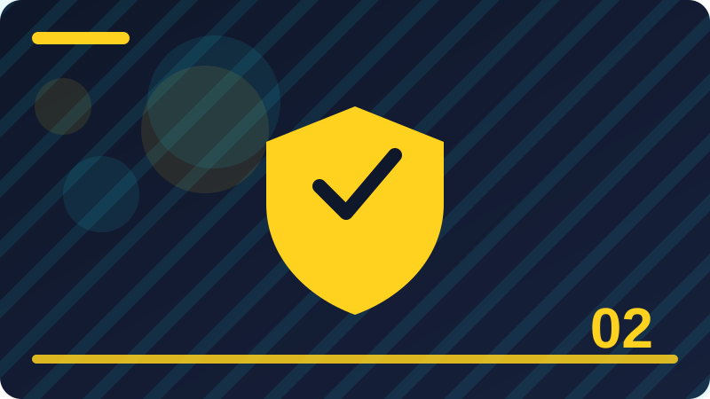

Chapter 2: Threats, Risks and Thinking Like a Defender

Section 1: What Counts as a Threat
This section explains what counts as a threat in plain words, using everyday examples you can picture and steps you can actually try on your own devices and accounts. An attacker does not need to be clever to succeed. Most attacks succeed because of a simple opening: a reused password, an old unpatched program, an unlocked device, or a person in a hurry. Attackers look for scale, so they reuse the same trick against thousands of people and keep whichever victims respond. Knowing this is encouraging, because it means the same few defences block most attacks. You do not have to outsmart every attacker; you only have to be a harder target than the easy openings they prefer. Assets are the things you want to protect, and they include more than money. Your identity, your private messages, your photos, your work, your contacts, and your time are all assets. Listing your assets, even briefly, changes how you think about security, because it turns a vague worry into a concrete list. Once you know what matters, you can decide which accounts need the strongest passwords, which files need backups, and which information should never be shared in public or with strangers. A vulnerability is a weakness in a system, a setting, or a habit that an attacker could use. Examples include software that has not been updated, a password that is short and common, and a device left signed in on a shared computer. Vulnerabilities are normal: no system is perfect, and new ones are found regularly. The defender's job is not to eliminate every weakness, but to find the important ones, fix what can be fixed, and add layers around what cannot be fixed right away. Social engineering is the name for attacks that work by persuading people rather than by breaking technology. A caller pretends to be from a bank, a message pretends to be from a boss, or a prize offer creates excitement that rushes your judgement. These attacks work because they use trust, authority, urgency, and kindness. The defence is a pause and an independent check: contact the organisation through a number or address you already trust, never through the link or number in the suspicious message itself. A small habit repeated every day protects you far more than one big effort made only once in a while. When you are unsure about a message, a link, or a request, pausing before you act is always the safer choice. Write down what you changed and why, so you can check it later and help someone else understand your decision. Good security feels ordinary most of the time, because it is built from simple steps done in the right order. If a step feels rushed or secretive, treat that feeling as useful information and slow down before you continue. Share what you learn with family and friends, because a household that understands the basics is harder to trick. Check the result after you finish a task, rather than assuming everything worked exactly as you expected it to.
Check: In your own words, explain what counts as a threat and give one everyday example of it in action.
Section 2: Likelihood and Impact: Two Questions
This section explains likelihood and impact: two questions in plain words, using everyday examples you can picture and steps you can actually try on your own devices and accounts. Social engineering is the name for attacks that work by persuading people rather than by breaking technology. A caller pretends to be from a bank, a message pretends to be from a boss, or a prize offer creates excitement that rushes your judgement. These attacks work because they use trust, authority, urgency, and kindness. The defence is a pause and an independent check: contact the organisation through a number or address you already trust, never through the link or number in the suspicious message itself. Malware is software made to harm, spy, or steal, and it usually reaches people through downloads, attachments, or fake updates. You do not need to know every type of malware to defend against it. The practical defences are the same: download only from trusted sources, be careful with attachments, keep protection software updated, and keep backups. If a download promises something too good to be true, or an update appears from an unexpected pop-up, treat it as suspicious until you can verify it properly. Your attack surface is the total set of ways someone could reach you: every account, app, device, and piece of shared information. The larger the surface, the more chances an attacker has. Reducing it is a quiet but powerful defence: close accounts you no longer use, remove apps you do not need, sign out of shared devices, and share less personal detail in public. Each removal is one fewer door to guard, and it costs you nothing except a few minutes of tidying. Likelihood depends on your habits and your exposure, not only on luck. Reusing one password everywhere raises the likelihood that one leak affects many accounts. Posting travel plans in public raises the likelihood of a targeted trick message. Clicking links without checking raises the likelihood of reaching a fake site. The good news is that likelihood is partly in your hands: every safer habit lowers it a little, and several safer habits together lower it a lot, even if you cannot bring it down to zero. A small habit repeated every day protects you far more than one big effort made only once in a while. When you are unsure about a message, a link, or a request, pausing before you act is always the safer choice. Write down what you changed and why, so you can check it later and help someone else understand your decision. Good security feels ordinary most of the time, because it is built from simple steps done in the right order. If a step feels rushed or secretive, treat that feeling as useful information and slow down before you continue. Share what you learn with family and friends, because a household that understands the basics is harder to trick. Check the result after you finish a task, rather than assuming everything worked exactly as you expected it to.
Check: In your own words, explain likelihood and impact: two questions and give one everyday example of it in action.
Section 3: Thinking Like a Defender
This section explains thinking like a defender in plain words, using everyday examples you can picture and steps you can actually try on your own devices and accounts. Likelihood depends on your habits and your exposure, not only on luck. Reusing one password everywhere raises the likelihood that one leak affects many accounts. Posting travel plans in public raises the likelihood of a targeted trick message. Clicking links without checking raises the likelihood of reaching a fake site. The good news is that likelihood is partly in your hands: every safer habit lowers it a little, and several safer habits together lower it a lot, even if you cannot bring it down to zero. Impact is about what happens after an incident, and it can be reduced in advance. Backups reduce the impact of losing files. A second sign-in check reduces the impact of a stolen password. Knowing how to report a stolen account reduces the time an attacker can use it. When you plan for impact, you are not expecting failure; you are making sure that a bad day stays a bad day instead of becoming a lasting disaster. Recovery plans are therefore a core part of thinking like a defender. A defender's mindset also includes calm, evidence, and honesty. When something looks wrong, note what you saw, when you saw it, and what you clicked, before you delete anything or panic. Evidence helps support teams help you, and it helps you avoid repeating the mistake. Blame helps nobody: even careful people are tricked, because tricks are designed by people who study human behaviour. Learning from an incident, fixing the opening, and telling others what to watch for turns a bad experience into protection for a whole community. A threat is any person, program, or event that could harm your devices, accounts, or information. Threats range from automated programs that guess passwords, to convincing messages that trick people, to simple accidents like losing a phone. Naming the threat helps you choose the right defence: a guessed password needs a stronger password, while a trick message needs careful checking. You do not need to fear every threat equally. You need a clear picture of the few threats that are most likely to reach you, and a plan for each of them. A small habit repeated every day protects you far more than one big effort made only once in a while. When you are unsure about a message, a link, or a request, pausing before you act is always the safer choice. Write down what you changed and why, so you can check it later and help someone else understand your decision. Good security feels ordinary most of the time, because it is built from simple steps done in the right order. If a step feels rushed or secretive, treat that feeling as useful information and slow down before you continue. Share what you learn with family and friends, because a household that understands the basics is harder to trick.
Check: In your own words, explain thinking like a defender and give one everyday example of it in action.
Section 4: Why Simple Openings Win for Attackers
This section explains why simple openings win for attackers in plain words, using everyday examples you can picture and steps you can actually try on your own devices and accounts. A threat is any person, program, or event that could harm your devices, accounts, or information. Threats range from automated programs that guess passwords, to convincing messages that trick people, to simple accidents like losing a phone. Naming the threat helps you choose the right defence: a guessed password needs a stronger password, while a trick message needs careful checking. You do not need to fear every threat equally. You need a clear picture of the few threats that are most likely to reach you, and a plan for each of them. Risk is a way of thinking about danger that combines likelihood and impact. A very likely but small harm, like spam messages, matters less than a rare but serious harm, like losing access to your email and bank accounts. When you compare risks, ask two questions: how likely is this to happen to me, and how bad would it be if it did? The answers tell you where to act first. This simple habit stops you from spending hours on unlikely dangers while ignoring a weak password on your main email account. Thinking like a defender means looking at your own life the way an attacker might, but for a protective purpose. Ask yourself: what do I have that someone else might want, where is it kept, and how could someone reach it? Then close the easiest paths first. This is not about suspicion or fear. It is about honest inventory: your email, your photos, your contacts, your money, and your reputation are all assets, and each one deserves a level of protection that matches its value to you. An attacker does not need to be clever to succeed. Most attacks succeed because of a simple opening: a reused password, an old unpatched program, an unlocked device, or a person in a hurry. Attackers look for scale, so they reuse the same trick against thousands of people and keep whichever victims respond. Knowing this is encouraging, because it means the same few defences block most attacks. You do not have to outsmart every attacker; you only have to be a harder target than the easy openings they prefer. A small habit repeated every day protects you far more than one big effort made only once in a while. When you are unsure about a message, a link, or a request, pausing before you act is always the safer choice. Write down what you changed and why, so you can check it later and help someone else understand your decision. Good security feels ordinary most of the time, because it is built from simple steps done in the right order. If a step feels rushed or secretive, treat that feeling as useful information and slow down before you continue. Share what you learn with family and friends, because a household that understands the basics is harder to trick.
Check: In your own words, explain why simple openings win for attackers and give one everyday example of it in action.
Section 5: Listing What You Want to Protect
This section explains listing what you want to protect in plain words, using everyday examples you can picture and steps you can actually try on your own devices and accounts. An attacker does not need to be clever to succeed. Most attacks succeed because of a simple opening: a reused password, an old unpatched program, an unlocked device, or a person in a hurry. Attackers look for scale, so they reuse the same trick against thousands of people and keep whichever victims respond. Knowing this is encouraging, because it means the same few defences block most attacks. You do not have to outsmart every attacker; you only have to be a harder target than the easy openings they prefer. Assets are the things you want to protect, and they include more than money. Your identity, your private messages, your photos, your work, your contacts, and your time are all assets. Listing your assets, even briefly, changes how you think about security, because it turns a vague worry into a concrete list. Once you know what matters, you can decide which accounts need the strongest passwords, which files need backups, and which information should never be shared in public or with strangers. A vulnerability is a weakness in a system, a setting, or a habit that an attacker could use. Examples include software that has not been updated, a password that is short and common, and a device left signed in on a shared computer. Vulnerabilities are normal: no system is perfect, and new ones are found regularly. The defender's job is not to eliminate every weakness, but to find the important ones, fix what can be fixed, and add layers around what cannot be fixed right away. Social engineering is the name for attacks that work by persuading people rather than by breaking technology. A caller pretends to be from a bank, a message pretends to be from a boss, or a prize offer creates excitement that rushes your judgement. These attacks work because they use trust, authority, urgency, and kindness. The defence is a pause and an independent check: contact the organisation through a number or address you already trust, never through the link or number in the suspicious message itself. A small habit repeated every day protects you far more than one big effort made only once in a while. When you are unsure about a message, a link, or a request, pausing before you act is always the safer choice. Write down what you changed and why, so you can check it later and help someone else understand your decision. Good security feels ordinary most of the time, because it is built from simple steps done in the right order. If a step feels rushed or secretive, treat that feeling as useful information and slow down before you continue. Share what you learn with family and friends, because a household that understands the basics is harder to trick. Check the result after you finish a task, rather than assuming everything worked exactly as you expected it to.
def risk_score(likelihood, impact):
# Scores from 1 (low) to 5 (high), for your own planning only.
return likelihood * impact
print('Email account risk:', risk_score(3, 5))
print('Old forum account risk:', risk_score(2, 1))Check: In your own words, explain listing what you want to protect and give one everyday example of it in action.
Section 6: What a Vulnerability Really Is
This section explains what a vulnerability really is in plain words, using everyday examples you can picture and steps you can actually try on your own devices and accounts. Social engineering is the name for attacks that work by persuading people rather than by breaking technology. A caller pretends to be from a bank, a message pretends to be from a boss, or a prize offer creates excitement that rushes your judgement. These attacks work because they use trust, authority, urgency, and kindness. The defence is a pause and an independent check: contact the organisation through a number or address you already trust, never through the link or number in the suspicious message itself. Malware is software made to harm, spy, or steal, and it usually reaches people through downloads, attachments, or fake updates. You do not need to know every type of malware to defend against it. The practical defences are the same: download only from trusted sources, be careful with attachments, keep protection software updated, and keep backups. If a download promises something too good to be true, or an update appears from an unexpected pop-up, treat it as suspicious until you can verify it properly. Your attack surface is the total set of ways someone could reach you: every account, app, device, and piece of shared information. The larger the surface, the more chances an attacker has. Reducing it is a quiet but powerful defence: close accounts you no longer use, remove apps you do not need, sign out of shared devices, and share less personal detail in public. Each removal is one fewer door to guard, and it costs you nothing except a few minutes of tidying. Likelihood depends on your habits and your exposure, not only on luck. Reusing one password everywhere raises the likelihood that one leak affects many accounts. Posting travel plans in public raises the likelihood of a targeted trick message. Clicking links without checking raises the likelihood of reaching a fake site. The good news is that likelihood is partly in your hands: every safer habit lowers it a little, and several safer habits together lower it a lot, even if you cannot bring it down to zero. A small habit repeated every day protects you far more than one big effort made only once in a while. When you are unsure about a message, a link, or a request, pausing before you act is always the safer choice. Write down what you changed and why, so you can check it later and help someone else understand your decision. Good security feels ordinary most of the time, because it is built from simple steps done in the right order. If a step feels rushed or secretive, treat that feeling as useful information and slow down before you continue. Share what you learn with family and friends, because a household that understands the basics is harder to trick. Check the result after you finish a task, rather than assuming everything worked exactly as you expected it to.
Check: In your own words, explain what a vulnerability really is and give one everyday example of it in action.
Section 7: Social Engineering in Plain Words
This section explains social engineering in plain words in plain words, using everyday examples you can picture and steps you can actually try on your own devices and accounts. Likelihood depends on your habits and your exposure, not only on luck. Reusing one password everywhere raises the likelihood that one leak affects many accounts. Posting travel plans in public raises the likelihood of a targeted trick message. Clicking links without checking raises the likelihood of reaching a fake site. The good news is that likelihood is partly in your hands: every safer habit lowers it a little, and several safer habits together lower it a lot, even if you cannot bring it down to zero. Impact is about what happens after an incident, and it can be reduced in advance. Backups reduce the impact of losing files. A second sign-in check reduces the impact of a stolen password. Knowing how to report a stolen account reduces the time an attacker can use it. When you plan for impact, you are not expecting failure; you are making sure that a bad day stays a bad day instead of becoming a lasting disaster. Recovery plans are therefore a core part of thinking like a defender. A defender's mindset also includes calm, evidence, and honesty. When something looks wrong, note what you saw, when you saw it, and what you clicked, before you delete anything or panic. Evidence helps support teams help you, and it helps you avoid repeating the mistake. Blame helps nobody: even careful people are tricked, because tricks are designed by people who study human behaviour. Learning from an incident, fixing the opening, and telling others what to watch for turns a bad experience into protection for a whole community. A threat is any person, program, or event that could harm your devices, accounts, or information. Threats range from automated programs that guess passwords, to convincing messages that trick people, to simple accidents like losing a phone. Naming the threat helps you choose the right defence: a guessed password needs a stronger password, while a trick message needs careful checking. You do not need to fear every threat equally. You need a clear picture of the few threats that are most likely to reach you, and a plan for each of them. A small habit repeated every day protects you far more than one big effort made only once in a while. When you are unsure about a message, a link, or a request, pausing before you act is always the safer choice. Write down what you changed and why, so you can check it later and help someone else understand your decision. Good security feels ordinary most of the time, because it is built from simple steps done in the right order. If a step feels rushed or secretive, treat that feeling as useful information and slow down before you continue. Share what you learn with family and friends, because a household that understands the basics is harder to trick.
Check: In your own words, explain social engineering in plain words and give one everyday example of it in action.
Section 8: Malware and How It Reaches People
This section explains malware and how it reaches people in plain words, using everyday examples you can picture and steps you can actually try on your own devices and accounts. A threat is any person, program, or event that could harm your devices, accounts, or information. Threats range from automated programs that guess passwords, to convincing messages that trick people, to simple accidents like losing a phone. Naming the threat helps you choose the right defence: a guessed password needs a stronger password, while a trick message needs careful checking. You do not need to fear every threat equally. You need a clear picture of the few threats that are most likely to reach you, and a plan for each of them. Risk is a way of thinking about danger that combines likelihood and impact. A very likely but small harm, like spam messages, matters less than a rare but serious harm, like losing access to your email and bank accounts. When you compare risks, ask two questions: how likely is this to happen to me, and how bad would it be if it did? The answers tell you where to act first. This simple habit stops you from spending hours on unlikely dangers while ignoring a weak password on your main email account. Thinking like a defender means looking at your own life the way an attacker might, but for a protective purpose. Ask yourself: what do I have that someone else might want, where is it kept, and how could someone reach it? Then close the easiest paths first. This is not about suspicion or fear. It is about honest inventory: your email, your photos, your contacts, your money, and your reputation are all assets, and each one deserves a level of protection that matches its value to you. An attacker does not need to be clever to succeed. Most attacks succeed because of a simple opening: a reused password, an old unpatched program, an unlocked device, or a person in a hurry. Attackers look for scale, so they reuse the same trick against thousands of people and keep whichever victims respond. Knowing this is encouraging, because it means the same few defences block most attacks. You do not have to outsmart every attacker; you only have to be a harder target than the easy openings they prefer. A small habit repeated every day protects you far more than one big effort made only once in a while. When you are unsure about a message, a link, or a request, pausing before you act is always the safer choice. Write down what you changed and why, so you can check it later and help someone else understand your decision. Good security feels ordinary most of the time, because it is built from simple steps done in the right order. If a step feels rushed or secretive, treat that feeling as useful information and slow down before you continue. Share what you learn with family and friends, because a household that understands the basics is harder to trick.
Check: In your own words, explain malware and how it reaches people and give one everyday example of it in action.
Section 9: Your Attack Surface, Explained
This section explains your attack surface, explained in plain words, using everyday examples you can picture and steps you can actually try on your own devices and accounts. An attacker does not need to be clever to succeed. Most attacks succeed because of a simple opening: a reused password, an old unpatched program, an unlocked device, or a person in a hurry. Attackers look for scale, so they reuse the same trick against thousands of people and keep whichever victims respond. Knowing this is encouraging, because it means the same few defences block most attacks. You do not have to outsmart every attacker; you only have to be a harder target than the easy openings they prefer. Assets are the things you want to protect, and they include more than money. Your identity, your private messages, your photos, your work, your contacts, and your time are all assets. Listing your assets, even briefly, changes how you think about security, because it turns a vague worry into a concrete list. Once you know what matters, you can decide which accounts need the strongest passwords, which files need backups, and which information should never be shared in public or with strangers. A vulnerability is a weakness in a system, a setting, or a habit that an attacker could use. Examples include software that has not been updated, a password that is short and common, and a device left signed in on a shared computer. Vulnerabilities are normal: no system is perfect, and new ones are found regularly. The defender's job is not to eliminate every weakness, but to find the important ones, fix what can be fixed, and add layers around what cannot be fixed right away. Social engineering is the name for attacks that work by persuading people rather than by breaking technology. A caller pretends to be from a bank, a message pretends to be from a boss, or a prize offer creates excitement that rushes your judgement. These attacks work because they use trust, authority, urgency, and kindness. The defence is a pause and an independent check: contact the organisation through a number or address you already trust, never through the link or number in the suspicious message itself. A small habit repeated every day protects you far more than one big effort made only once in a while. When you are unsure about a message, a link, or a request, pausing before you act is always the safer choice. Write down what you changed and why, so you can check it later and help someone else understand your decision. Good security feels ordinary most of the time, because it is built from simple steps done in the right order. If a step feels rushed or secretive, treat that feeling as useful information and slow down before you continue. Share what you learn with family and friends, because a household that understands the basics is harder to trick. Check the result after you finish a task, rather than assuming everything worked exactly as you expected it to.
Check: In your own words, explain your attack surface, explained and give one everyday example of it in action.
Section 10: How Your Habits Change Likelihood
This section explains how your habits change likelihood in plain words, using everyday examples you can picture and steps you can actually try on your own devices and accounts. Social engineering is the name for attacks that work by persuading people rather than by breaking technology. A caller pretends to be from a bank, a message pretends to be from a boss, or a prize offer creates excitement that rushes your judgement. These attacks work because they use trust, authority, urgency, and kindness. The defence is a pause and an independent check: contact the organisation through a number or address you already trust, never through the link or number in the suspicious message itself. Malware is software made to harm, spy, or steal, and it usually reaches people through downloads, attachments, or fake updates. You do not need to know every type of malware to defend against it. The practical defences are the same: download only from trusted sources, be careful with attachments, keep protection software updated, and keep backups. If a download promises something too good to be true, or an update appears from an unexpected pop-up, treat it as suspicious until you can verify it properly. Your attack surface is the total set of ways someone could reach you: every account, app, device, and piece of shared information. The larger the surface, the more chances an attacker has. Reducing it is a quiet but powerful defence: close accounts you no longer use, remove apps you do not need, sign out of shared devices, and share less personal detail in public. Each removal is one fewer door to guard, and it costs you nothing except a few minutes of tidying. Likelihood depends on your habits and your exposure, not only on luck. Reusing one password everywhere raises the likelihood that one leak affects many accounts. Posting travel plans in public raises the likelihood of a targeted trick message. Clicking links without checking raises the likelihood of reaching a fake site. The good news is that likelihood is partly in your hands: every safer habit lowers it a little, and several safer habits together lower it a lot, even if you cannot bring it down to zero. A small habit repeated every day protects you far more than one big effort made only once in a while. When you are unsure about a message, a link, or a request, pausing before you act is always the safer choice. Write down what you changed and why, so you can check it later and help someone else understand your decision. Good security feels ordinary most of the time, because it is built from simple steps done in the right order. If a step feels rushed or secretive, treat that feeling as useful information and slow down before you continue. Share what you learn with family and friends, because a household that understands the basics is harder to trick. Check the result after you finish a task, rather than assuming everything worked exactly as you expected it to.
Check: In your own words, explain how your habits change likelihood and give one everyday example of it in action.
Section 11: Reducing Impact Before Anything Goes Wrong
This section explains reducing impact before anything goes wrong in plain words, using everyday examples you can picture and steps you can actually try on your own devices and accounts. Likelihood depends on your habits and your exposure, not only on luck. Reusing one password everywhere raises the likelihood that one leak affects many accounts. Posting travel plans in public raises the likelihood of a targeted trick message. Clicking links without checking raises the likelihood of reaching a fake site. The good news is that likelihood is partly in your hands: every safer habit lowers it a little, and several safer habits together lower it a lot, even if you cannot bring it down to zero. Impact is about what happens after an incident, and it can be reduced in advance. Backups reduce the impact of losing files. A second sign-in check reduces the impact of a stolen password. Knowing how to report a stolen account reduces the time an attacker can use it. When you plan for impact, you are not expecting failure; you are making sure that a bad day stays a bad day instead of becoming a lasting disaster. Recovery plans are therefore a core part of thinking like a defender. A defender's mindset also includes calm, evidence, and honesty. When something looks wrong, note what you saw, when you saw it, and what you clicked, before you delete anything or panic. Evidence helps support teams help you, and it helps you avoid repeating the mistake. Blame helps nobody: even careful people are tricked, because tricks are designed by people who study human behaviour. Learning from an incident, fixing the opening, and telling others what to watch for turns a bad experience into protection for a whole community. A threat is any person, program, or event that could harm your devices, accounts, or information. Threats range from automated programs that guess passwords, to convincing messages that trick people, to simple accidents like losing a phone. Naming the threat helps you choose the right defence: a guessed password needs a stronger password, while a trick message needs careful checking. You do not need to fear every threat equally. You need a clear picture of the few threats that are most likely to reach you, and a plan for each of them. A small habit repeated every day protects you far more than one big effort made only once in a while. When you are unsure about a message, a link, or a request, pausing before you act is always the safer choice. Write down what you changed and why, so you can check it later and help someone else understand your decision. Good security feels ordinary most of the time, because it is built from simple steps done in the right order. If a step feels rushed or secretive, treat that feeling as useful information and slow down before you continue. Share what you learn with family and friends, because a household that understands the basics is harder to trick.
Check: In your own words, explain reducing impact before anything goes wrong and give one everyday example of it in action.
Section 12: Calm, Evidence and Honesty After an Incident
This section explains calm, evidence and honesty after an incident in plain words, using everyday examples you can picture and steps you can actually try on your own devices and accounts. A threat is any person, program, or event that could harm your devices, accounts, or information. Threats range from automated programs that guess passwords, to convincing messages that trick people, to simple accidents like losing a phone. Naming the threat helps you choose the right defence: a guessed password needs a stronger password, while a trick message needs careful checking. You do not need to fear every threat equally. You need a clear picture of the few threats that are most likely to reach you, and a plan for each of them. Risk is a way of thinking about danger that combines likelihood and impact. A very likely but small harm, like spam messages, matters less than a rare but serious harm, like losing access to your email and bank accounts. When you compare risks, ask two questions: how likely is this to happen to me, and how bad would it be if it did? The answers tell you where to act first. This simple habit stops you from spending hours on unlikely dangers while ignoring a weak password on your main email account. Thinking like a defender means looking at your own life the way an attacker might, but for a protective purpose. Ask yourself: what do I have that someone else might want, where is it kept, and how could someone reach it? Then close the easiest paths first. This is not about suspicion or fear. It is about honest inventory: your email, your photos, your contacts, your money, and your reputation are all assets, and each one deserves a level of protection that matches its value to you. An attacker does not need to be clever to succeed. Most attacks succeed because of a simple opening: a reused password, an old unpatched program, an unlocked device, or a person in a hurry. Attackers look for scale, so they reuse the same trick against thousands of people and keep whichever victims respond. Knowing this is encouraging, because it means the same few defences block most attacks. You do not have to outsmart every attacker; you only have to be a harder target than the easy openings they prefer. A small habit repeated every day protects you far more than one big effort made only once in a while. When you are unsure about a message, a link, or a request, pausing before you act is always the safer choice. Write down what you changed and why, so you can check it later and help someone else understand your decision. Good security feels ordinary most of the time, because it is built from simple steps done in the right order. If a step feels rushed or secretive, treat that feeling as useful information and slow down before you continue. Share what you learn with family and friends, because a household that understands the basics is harder to trick.
Check: In your own words, explain calm, evidence and honesty after an incident and give one everyday example of it in action.
Section 13: Common Threats to Ordinary Users
This section explains common threats to ordinary users in plain words, using everyday examples you can picture and steps you can actually try on your own devices and accounts. An attacker does not need to be clever to succeed. Most attacks succeed because of a simple opening: a reused password, an old unpatched program, an unlocked device, or a person in a hurry. Attackers look for scale, so they reuse the same trick against thousands of people and keep whichever victims respond. Knowing this is encouraging, because it means the same few defences block most attacks. You do not have to outsmart every attacker; you only have to be a harder target than the easy openings they prefer. Assets are the things you want to protect, and they include more than money. Your identity, your private messages, your photos, your work, your contacts, and your time are all assets. Listing your assets, even briefly, changes how you think about security, because it turns a vague worry into a concrete list. Once you know what matters, you can decide which accounts need the strongest passwords, which files need backups, and which information should never be shared in public or with strangers. A vulnerability is a weakness in a system, a setting, or a habit that an attacker could use. Examples include software that has not been updated, a password that is short and common, and a device left signed in on a shared computer. Vulnerabilities are normal: no system is perfect, and new ones are found regularly. The defender's job is not to eliminate every weakness, but to find the important ones, fix what can be fixed, and add layers around what cannot be fixed right away. Social engineering is the name for attacks that work by persuading people rather than by breaking technology. A caller pretends to be from a bank, a message pretends to be from a boss, or a prize offer creates excitement that rushes your judgement. These attacks work because they use trust, authority, urgency, and kindness. The defence is a pause and an independent check: contact the organisation through a number or address you already trust, never through the link or number in the suspicious message itself. A small habit repeated every day protects you far more than one big effort made only once in a while. When you are unsure about a message, a link, or a request, pausing before you act is always the safer choice. Write down what you changed and why, so you can check it later and help someone else understand your decision. Good security feels ordinary most of the time, because it is built from simple steps done in the right order. If a step feels rushed or secretive, treat that feeling as useful information and slow down before you continue. Share what you learn with family and friends, because a household that understands the basics is harder to trick. Check the result after you finish a task, rather than assuming everything worked exactly as you expected it to.
Check: In your own words, explain common threats to ordinary users and give one everyday example of it in action.
Section 14: Automated Attacks and Why Scale Matters
This section explains automated attacks and why scale matters in plain words, using everyday examples you can picture and steps you can actually try on your own devices and accounts. Social engineering is the name for attacks that work by persuading people rather than by breaking technology. A caller pretends to be from a bank, a message pretends to be from a boss, or a prize offer creates excitement that rushes your judgement. These attacks work because they use trust, authority, urgency, and kindness. The defence is a pause and an independent check: contact the organisation through a number or address you already trust, never through the link or number in the suspicious message itself. Malware is software made to harm, spy, or steal, and it usually reaches people through downloads, attachments, or fake updates. You do not need to know every type of malware to defend against it. The practical defences are the same: download only from trusted sources, be careful with attachments, keep protection software updated, and keep backups. If a download promises something too good to be true, or an update appears from an unexpected pop-up, treat it as suspicious until you can verify it properly. Your attack surface is the total set of ways someone could reach you: every account, app, device, and piece of shared information. The larger the surface, the more chances an attacker has. Reducing it is a quiet but powerful defence: close accounts you no longer use, remove apps you do not need, sign out of shared devices, and share less personal detail in public. Each removal is one fewer door to guard, and it costs you nothing except a few minutes of tidying. Likelihood depends on your habits and your exposure, not only on luck. Reusing one password everywhere raises the likelihood that one leak affects many accounts. Posting travel plans in public raises the likelihood of a targeted trick message. Clicking links without checking raises the likelihood of reaching a fake site. The good news is that likelihood is partly in your hands: every safer habit lowers it a little, and several safer habits together lower it a lot, even if you cannot bring it down to zero. A small habit repeated every day protects you far more than one big effort made only once in a while. When you are unsure about a message, a link, or a request, pausing before you act is always the safer choice. Write down what you changed and why, so you can check it later and help someone else understand your decision. Good security feels ordinary most of the time, because it is built from simple steps done in the right order. If a step feels rushed or secretive, treat that feeling as useful information and slow down before you continue. Share what you learn with family and friends, because a household that understands the basics is harder to trick. Check the result after you finish a task, rather than assuming everything worked exactly as you expected it to.
Check: In your own words, explain automated attacks and why scale matters and give one everyday example of it in action.
Section 15: Targeted Attacks and Why They Are Rarer
This section explains targeted attacks and why they are rarer in plain words, using everyday examples you can picture and steps you can actually try on your own devices and accounts. Likelihood depends on your habits and your exposure, not only on luck. Reusing one password everywhere raises the likelihood that one leak affects many accounts. Posting travel plans in public raises the likelihood of a targeted trick message. Clicking links without checking raises the likelihood of reaching a fake site. The good news is that likelihood is partly in your hands: every safer habit lowers it a little, and several safer habits together lower it a lot, even if you cannot bring it down to zero. Impact is about what happens after an incident, and it can be reduced in advance. Backups reduce the impact of losing files. A second sign-in check reduces the impact of a stolen password. Knowing how to report a stolen account reduces the time an attacker can use it. When you plan for impact, you are not expecting failure; you are making sure that a bad day stays a bad day instead of becoming a lasting disaster. Recovery plans are therefore a core part of thinking like a defender. A defender's mindset also includes calm, evidence, and honesty. When something looks wrong, note what you saw, when you saw it, and what you clicked, before you delete anything or panic. Evidence helps support teams help you, and it helps you avoid repeating the mistake. Blame helps nobody: even careful people are tricked, because tricks are designed by people who study human behaviour. Learning from an incident, fixing the opening, and telling others what to watch for turns a bad experience into protection for a whole community. A threat is any person, program, or event that could harm your devices, accounts, or information. Threats range from automated programs that guess passwords, to convincing messages that trick people, to simple accidents like losing a phone. Naming the threat helps you choose the right defence: a guessed password needs a stronger password, while a trick message needs careful checking. You do not need to fear every threat equally. You need a clear picture of the few threats that are most likely to reach you, and a plan for each of them. A small habit repeated every day protects you far more than one big effort made only once in a while. When you are unsure about a message, a link, or a request, pausing before you act is always the safer choice. Write down what you changed and why, so you can check it later and help someone else understand your decision. Good security feels ordinary most of the time, because it is built from simple steps done in the right order. If a step feels rushed or secretive, treat that feeling as useful information and slow down before you continue. Share what you learn with family and friends, because a household that understands the basics is harder to trick.
def list_assets(assets):
for name, value in assets.items():
print(f'{name}: value to me = {value}/5')
list_assets({'Email': 5, 'Photos': 4, 'Old forum account': 1})Check: In your own words, explain targeted attacks and why they are rarer and give one everyday example of it in action.
Section 16: Insider Risks in Plain Words
This section explains insider risks in plain words in plain words, using everyday examples you can picture and steps you can actually try on your own devices and accounts. A threat is any person, program, or event that could harm your devices, accounts, or information. Threats range from automated programs that guess passwords, to convincing messages that trick people, to simple accidents like losing a phone. Naming the threat helps you choose the right defence: a guessed password needs a stronger password, while a trick message needs careful checking. You do not need to fear every threat equally. You need a clear picture of the few threats that are most likely to reach you, and a plan for each of them. Risk is a way of thinking about danger that combines likelihood and impact. A very likely but small harm, like spam messages, matters less than a rare but serious harm, like losing access to your email and bank accounts. When you compare risks, ask two questions: how likely is this to happen to me, and how bad would it be if it did? The answers tell you where to act first. This simple habit stops you from spending hours on unlikely dangers while ignoring a weak password on your main email account. Thinking like a defender means looking at your own life the way an attacker might, but for a protective purpose. Ask yourself: what do I have that someone else might want, where is it kept, and how could someone reach it? Then close the easiest paths first. This is not about suspicion or fear. It is about honest inventory: your email, your photos, your contacts, your money, and your reputation are all assets, and each one deserves a level of protection that matches its value to you. An attacker does not need to be clever to succeed. Most attacks succeed because of a simple opening: a reused password, an old unpatched program, an unlocked device, or a person in a hurry. Attackers look for scale, so they reuse the same trick against thousands of people and keep whichever victims respond. Knowing this is encouraging, because it means the same few defences block most attacks. You do not have to outsmart every attacker; you only have to be a harder target than the easy openings they prefer. A small habit repeated every day protects you far more than one big effort made only once in a while. When you are unsure about a message, a link, or a request, pausing before you act is always the safer choice. Write down what you changed and why, so you can check it later and help someone else understand your decision. Good security feels ordinary most of the time, because it is built from simple steps done in the right order. If a step feels rushed or secretive, treat that feeling as useful information and slow down before you continue. Share what you learn with family and friends, because a household that understands the basics is harder to trick.
Check: In your own words, explain insider risks in plain words and give one everyday example of it in action.
Section 17: Accidents as a Security Threat
This section explains accidents as a security threat in plain words, using everyday examples you can picture and steps you can actually try on your own devices and accounts. An attacker does not need to be clever to succeed. Most attacks succeed because of a simple opening: a reused password, an old unpatched program, an unlocked device, or a person in a hurry. Attackers look for scale, so they reuse the same trick against thousands of people and keep whichever victims respond. Knowing this is encouraging, because it means the same few defences block most attacks. You do not have to outsmart every attacker; you only have to be a harder target than the easy openings they prefer. Assets are the things you want to protect, and they include more than money. Your identity, your private messages, your photos, your work, your contacts, and your time are all assets. Listing your assets, even briefly, changes how you think about security, because it turns a vague worry into a concrete list. Once you know what matters, you can decide which accounts need the strongest passwords, which files need backups, and which information should never be shared in public or with strangers. A vulnerability is a weakness in a system, a setting, or a habit that an attacker could use. Examples include software that has not been updated, a password that is short and common, and a device left signed in on a shared computer. Vulnerabilities are normal: no system is perfect, and new ones are found regularly. The defender's job is not to eliminate every weakness, but to find the important ones, fix what can be fixed, and add layers around what cannot be fixed right away. Social engineering is the name for attacks that work by persuading people rather than by breaking technology. A caller pretends to be from a bank, a message pretends to be from a boss, or a prize offer creates excitement that rushes your judgement. These attacks work because they use trust, authority, urgency, and kindness. The defence is a pause and an independent check: contact the organisation through a number or address you already trust, never through the link or number in the suspicious message itself. A small habit repeated every day protects you far more than one big effort made only once in a while. When you are unsure about a message, a link, or a request, pausing before you act is always the safer choice. Write down what you changed and why, so you can check it later and help someone else understand your decision. Good security feels ordinary most of the time, because it is built from simple steps done in the right order. If a step feels rushed or secretive, treat that feeling as useful information and slow down before you continue. Share what you learn with family and friends, because a household that understands the basics is harder to trick. Check the result after you finish a task, rather than assuming everything worked exactly as you expected it to.
Check: In your own words, explain accidents as a security threat and give one everyday example of it in action.
Section 18: Old Password Leaks and Their Long Shadow
This section explains old password leaks and their long shadow in plain words, using everyday examples you can picture and steps you can actually try on your own devices and accounts. Social engineering is the name for attacks that work by persuading people rather than by breaking technology. A caller pretends to be from a bank, a message pretends to be from a boss, or a prize offer creates excitement that rushes your judgement. These attacks work because they use trust, authority, urgency, and kindness. The defence is a pause and an independent check: contact the organisation through a number or address you already trust, never through the link or number in the suspicious message itself. Malware is software made to harm, spy, or steal, and it usually reaches people through downloads, attachments, or fake updates. You do not need to know every type of malware to defend against it. The practical defences are the same: download only from trusted sources, be careful with attachments, keep protection software updated, and keep backups. If a download promises something too good to be true, or an update appears from an unexpected pop-up, treat it as suspicious until you can verify it properly. Your attack surface is the total set of ways someone could reach you: every account, app, device, and piece of shared information. The larger the surface, the more chances an attacker has. Reducing it is a quiet but powerful defence: close accounts you no longer use, remove apps you do not need, sign out of shared devices, and share less personal detail in public. Each removal is one fewer door to guard, and it costs you nothing except a few minutes of tidying. Likelihood depends on your habits and your exposure, not only on luck. Reusing one password everywhere raises the likelihood that one leak affects many accounts. Posting travel plans in public raises the likelihood of a targeted trick message. Clicking links without checking raises the likelihood of reaching a fake site. The good news is that likelihood is partly in your hands: every safer habit lowers it a little, and several safer habits together lower it a lot, even if you cannot bring it down to zero. A small habit repeated every day protects you far more than one big effort made only once in a while. When you are unsure about a message, a link, or a request, pausing before you act is always the safer choice. Write down what you changed and why, so you can check it later and help someone else understand your decision. Good security feels ordinary most of the time, because it is built from simple steps done in the right order. If a step feels rushed or secretive, treat that feeling as useful information and slow down before you continue. Share what you learn with family and friends, because a household that understands the basics is harder to trick. Check the result after you finish a task, rather than assuming everything worked exactly as you expected it to.
Check: In your own words, explain old password leaks and their long shadow and give one everyday example of it in action.
Section 19: When One Account Unlocks Many Others
This section explains when one account unlocks many others in plain words, using everyday examples you can picture and steps you can actually try on your own devices and accounts. Likelihood depends on your habits and your exposure, not only on luck. Reusing one password everywhere raises the likelihood that one leak affects many accounts. Posting travel plans in public raises the likelihood of a targeted trick message. Clicking links without checking raises the likelihood of reaching a fake site. The good news is that likelihood is partly in your hands: every safer habit lowers it a little, and several safer habits together lower it a lot, even if you cannot bring it down to zero. Impact is about what happens after an incident, and it can be reduced in advance. Backups reduce the impact of losing files. A second sign-in check reduces the impact of a stolen password. Knowing how to report a stolen account reduces the time an attacker can use it. When you plan for impact, you are not expecting failure; you are making sure that a bad day stays a bad day instead of becoming a lasting disaster. Recovery plans are therefore a core part of thinking like a defender. A defender's mindset also includes calm, evidence, and honesty. When something looks wrong, note what you saw, when you saw it, and what you clicked, before you delete anything or panic. Evidence helps support teams help you, and it helps you avoid repeating the mistake. Blame helps nobody: even careful people are tricked, because tricks are designed by people who study human behaviour. Learning from an incident, fixing the opening, and telling others what to watch for turns a bad experience into protection for a whole community. A threat is any person, program, or event that could harm your devices, accounts, or information. Threats range from automated programs that guess passwords, to convincing messages that trick people, to simple accidents like losing a phone. Naming the threat helps you choose the right defence: a guessed password needs a stronger password, while a trick message needs careful checking. You do not need to fear every threat equally. You need a clear picture of the few threats that are most likely to reach you, and a plan for each of them. A small habit repeated every day protects you far more than one big effort made only once in a while. When you are unsure about a message, a link, or a request, pausing before you act is always the safer choice. Write down what you changed and why, so you can check it later and help someone else understand your decision. Good security feels ordinary most of the time, because it is built from simple steps done in the right order. If a step feels rushed or secretive, treat that feeling as useful information and slow down before you continue. Share what you learn with family and friends, because a household that understands the basics is harder to trick.
Check: In your own words, explain when one account unlocks many others and give one everyday example of it in action.
Section 20: Ranking Your Own Risks
This section explains ranking your own risks in plain words, using everyday examples you can picture and steps you can actually try on your own devices and accounts. A threat is any person, program, or event that could harm your devices, accounts, or information. Threats range from automated programs that guess passwords, to convincing messages that trick people, to simple accidents like losing a phone. Naming the threat helps you choose the right defence: a guessed password needs a stronger password, while a trick message needs careful checking. You do not need to fear every threat equally. You need a clear picture of the few threats that are most likely to reach you, and a plan for each of them. Risk is a way of thinking about danger that combines likelihood and impact. A very likely but small harm, like spam messages, matters less than a rare but serious harm, like losing access to your email and bank accounts. When you compare risks, ask two questions: how likely is this to happen to me, and how bad would it be if it did? The answers tell you where to act first. This simple habit stops you from spending hours on unlikely dangers while ignoring a weak password on your main email account. Thinking like a defender means looking at your own life the way an attacker might, but for a protective purpose. Ask yourself: what do I have that someone else might want, where is it kept, and how could someone reach it? Then close the easiest paths first. This is not about suspicion or fear. It is about honest inventory: your email, your photos, your contacts, your money, and your reputation are all assets, and each one deserves a level of protection that matches its value to you. An attacker does not need to be clever to succeed. Most attacks succeed because of a simple opening: a reused password, an old unpatched program, an unlocked device, or a person in a hurry. Attackers look for scale, so they reuse the same trick against thousands of people and keep whichever victims respond. Knowing this is encouraging, because it means the same few defences block most attacks. You do not have to outsmart every attacker; you only have to be a harder target than the easy openings they prefer. A small habit repeated every day protects you far more than one big effort made only once in a while. When you are unsure about a message, a link, or a request, pausing before you act is always the safer choice. Write down what you changed and why, so you can check it later and help someone else understand your decision. Good security feels ordinary most of the time, because it is built from simple steps done in the right order. If a step feels rushed or secretive, treat that feeling as useful information and slow down before you continue. Share what you learn with family and friends, because a household that understands the basics is harder to trick.
Check: In your own words, explain ranking your own risks and give one everyday example of it in action.
Section 21: A Simple Risk Table You Can Draw
This section explains a simple risk table you can draw in plain words, using everyday examples you can picture and steps you can actually try on your own devices and accounts. An attacker does not need to be clever to succeed. Most attacks succeed because of a simple opening: a reused password, an old unpatched program, an unlocked device, or a person in a hurry. Attackers look for scale, so they reuse the same trick against thousands of people and keep whichever victims respond. Knowing this is encouraging, because it means the same few defences block most attacks. You do not have to outsmart every attacker; you only have to be a harder target than the easy openings they prefer. Assets are the things you want to protect, and they include more than money. Your identity, your private messages, your photos, your work, your contacts, and your time are all assets. Listing your assets, even briefly, changes how you think about security, because it turns a vague worry into a concrete list. Once you know what matters, you can decide which accounts need the strongest passwords, which files need backups, and which information should never be shared in public or with strangers. A vulnerability is a weakness in a system, a setting, or a habit that an attacker could use. Examples include software that has not been updated, a password that is short and common, and a device left signed in on a shared computer. Vulnerabilities are normal: no system is perfect, and new ones are found regularly. The defender's job is not to eliminate every weakness, but to find the important ones, fix what can be fixed, and add layers around what cannot be fixed right away. Social engineering is the name for attacks that work by persuading people rather than by breaking technology. A caller pretends to be from a bank, a message pretends to be from a boss, or a prize offer creates excitement that rushes your judgement. These attacks work because they use trust, authority, urgency, and kindness. The defence is a pause and an independent check: contact the organisation through a number or address you already trust, never through the link or number in the suspicious message itself. A small habit repeated every day protects you far more than one big effort made only once in a while. When you are unsure about a message, a link, or a request, pausing before you act is always the safer choice. Write down what you changed and why, so you can check it later and help someone else understand your decision. Good security feels ordinary most of the time, because it is built from simple steps done in the right order. If a step feels rushed or secretive, treat that feeling as useful information and slow down before you continue. Share what you learn with family and friends, because a household that understands the basics is harder to trick.
Check: In your own words, explain a simple risk table you can draw and give one everyday example of it in action.
Section 22: Choosing Defences That Match the Risk
This section explains choosing defences that match the risk in plain words, using everyday examples you can picture and steps you can actually try on your own devices and accounts. Social engineering is the name for attacks that work by persuading people rather than by breaking technology. A caller pretends to be from a bank, a message pretends to be from a boss, or a prize offer creates excitement that rushes your judgement. These attacks work because they use trust, authority, urgency, and kindness. The defence is a pause and an independent check: contact the organisation through a number or address you already trust, never through the link or number in the suspicious message itself. Malware is software made to harm, spy, or steal, and it usually reaches people through downloads, attachments, or fake updates. You do not need to know every type of malware to defend against it. The practical defences are the same: download only from trusted sources, be careful with attachments, keep protection software updated, and keep backups. If a download promises something too good to be true, or an update appears from an unexpected pop-up, treat it as suspicious until you can verify it properly. Your attack surface is the total set of ways someone could reach you: every account, app, device, and piece of shared information. The larger the surface, the more chances an attacker has. Reducing it is a quiet but powerful defence: close accounts you no longer use, remove apps you do not need, sign out of shared devices, and share less personal detail in public. Each removal is one fewer door to guard, and it costs you nothing except a few minutes of tidying. Likelihood depends on your habits and your exposure, not only on luck. Reusing one password everywhere raises the likelihood that one leak affects many accounts. Posting travel plans in public raises the likelihood of a targeted trick message. Clicking links without checking raises the likelihood of reaching a fake site. The good news is that likelihood is partly in your hands: every safer habit lowers it a little, and several safer habits together lower it a lot, even if you cannot bring it down to zero. A small habit repeated every day protects you far more than one big effort made only once in a while. When you are unsure about a message, a link, or a request, pausing before you act is always the safer choice. Write down what you changed and why, so you can check it later and help someone else understand your decision. Good security feels ordinary most of the time, because it is built from simple steps done in the right order. If a step feels rushed or secretive, treat that feeling as useful information and slow down before you continue. Share what you learn with family and friends, because a household that understands the basics is harder to trick. Check the result after you finish a task, rather than assuming everything worked exactly as you expected it to.
Check: In your own words, explain choosing defences that match the risk and give one everyday example of it in action.
Section 23: Accepting Some Risk Honestly
This section explains accepting some risk honestly in plain words, using everyday examples you can picture and steps you can actually try on your own devices and accounts. Likelihood depends on your habits and your exposure, not only on luck. Reusing one password everywhere raises the likelihood that one leak affects many accounts. Posting travel plans in public raises the likelihood of a targeted trick message. Clicking links without checking raises the likelihood of reaching a fake site. The good news is that likelihood is partly in your hands: every safer habit lowers it a little, and several safer habits together lower it a lot, even if you cannot bring it down to zero. Impact is about what happens after an incident, and it can be reduced in advance. Backups reduce the impact of losing files. A second sign-in check reduces the impact of a stolen password. Knowing how to report a stolen account reduces the time an attacker can use it. When you plan for impact, you are not expecting failure; you are making sure that a bad day stays a bad day instead of becoming a lasting disaster. Recovery plans are therefore a core part of thinking like a defender. A defender's mindset also includes calm, evidence, and honesty. When something looks wrong, note what you saw, when you saw it, and what you clicked, before you delete anything or panic. Evidence helps support teams help you, and it helps you avoid repeating the mistake. Blame helps nobody: even careful people are tricked, because tricks are designed by people who study human behaviour. Learning from an incident, fixing the opening, and telling others what to watch for turns a bad experience into protection for a whole community. A threat is any person, program, or event that could harm your devices, accounts, or information. Threats range from automated programs that guess passwords, to convincing messages that trick people, to simple accidents like losing a phone. Naming the threat helps you choose the right defence: a guessed password needs a stronger password, while a trick message needs careful checking. You do not need to fear every threat equally. You need a clear picture of the few threats that are most likely to reach you, and a plan for each of them. A small habit repeated every day protects you far more than one big effort made only once in a while. When you are unsure about a message, a link, or a request, pausing before you act is always the safer choice. Write down what you changed and why, so you can check it later and help someone else understand your decision. Good security feels ordinary most of the time, because it is built from simple steps done in the right order. If a step feels rushed or secretive, treat that feeling as useful information and slow down before you continue. Share what you learn with family and friends, because a household that understands the basics is harder to trick.
Check: In your own words, explain accepting some risk honestly and give one everyday example of it in action.
Section 24: What You Cannot Control
This section explains what you cannot control in plain words, using everyday examples you can picture and steps you can actually try on your own devices and accounts. A threat is any person, program, or event that could harm your devices, accounts, or information. Threats range from automated programs that guess passwords, to convincing messages that trick people, to simple accidents like losing a phone. Naming the threat helps you choose the right defence: a guessed password needs a stronger password, while a trick message needs careful checking. You do not need to fear every threat equally. You need a clear picture of the few threats that are most likely to reach you, and a plan for each of them. Risk is a way of thinking about danger that combines likelihood and impact. A very likely but small harm, like spam messages, matters less than a rare but serious harm, like losing access to your email and bank accounts. When you compare risks, ask two questions: how likely is this to happen to me, and how bad would it be if it did? The answers tell you where to act first. This simple habit stops you from spending hours on unlikely dangers while ignoring a weak password on your main email account. Thinking like a defender means looking at your own life the way an attacker might, but for a protective purpose. Ask yourself: what do I have that someone else might want, where is it kept, and how could someone reach it? Then close the easiest paths first. This is not about suspicion or fear. It is about honest inventory: your email, your photos, your contacts, your money, and your reputation are all assets, and each one deserves a level of protection that matches its value to you. An attacker does not need to be clever to succeed. Most attacks succeed because of a simple opening: a reused password, an old unpatched program, an unlocked device, or a person in a hurry. Attackers look for scale, so they reuse the same trick against thousands of people and keep whichever victims respond. Knowing this is encouraging, because it means the same few defences block most attacks. You do not have to outsmart every attacker; you only have to be a harder target than the easy openings they prefer. A small habit repeated every day protects you far more than one big effort made only once in a while. When you are unsure about a message, a link, or a request, pausing before you act is always the safer choice. Write down what you changed and why, so you can check it later and help someone else understand your decision. Good security feels ordinary most of the time, because it is built from simple steps done in the right order. If a step feels rushed or secretive, treat that feeling as useful information and slow down before you continue. Share what you learn with family and friends, because a household that understands the basics is harder to trick.
Check: In your own words, explain what you cannot control and give one everyday example of it in action.
Section 25: The Attacker's Point of View, Used for Good
This section explains the attacker's point of view, used for good in plain words, using everyday examples you can picture and steps you can actually try on your own devices and accounts. An attacker does not need to be clever to succeed. Most attacks succeed because of a simple opening: a reused password, an old unpatched program, an unlocked device, or a person in a hurry. Attackers look for scale, so they reuse the same trick against thousands of people and keep whichever victims respond. Knowing this is encouraging, because it means the same few defences block most attacks. You do not have to outsmart every attacker; you only have to be a harder target than the easy openings they prefer. Assets are the things you want to protect, and they include more than money. Your identity, your private messages, your photos, your work, your contacts, and your time are all assets. Listing your assets, even briefly, changes how you think about security, because it turns a vague worry into a concrete list. Once you know what matters, you can decide which accounts need the strongest passwords, which files need backups, and which information should never be shared in public or with strangers. A vulnerability is a weakness in a system, a setting, or a habit that an attacker could use. Examples include software that has not been updated, a password that is short and common, and a device left signed in on a shared computer. Vulnerabilities are normal: no system is perfect, and new ones are found regularly. The defender's job is not to eliminate every weakness, but to find the important ones, fix what can be fixed, and add layers around what cannot be fixed right away. Social engineering is the name for attacks that work by persuading people rather than by breaking technology. A caller pretends to be from a bank, a message pretends to be from a boss, or a prize offer creates excitement that rushes your judgement. These attacks work because they use trust, authority, urgency, and kindness. The defence is a pause and an independent check: contact the organisation through a number or address you already trust, never through the link or number in the suspicious message itself. A small habit repeated every day protects you far more than one big effort made only once in a while. When you are unsure about a message, a link, or a request, pausing before you act is always the safer choice. Write down what you changed and why, so you can check it later and help someone else understand your decision. Good security feels ordinary most of the time, because it is built from simple steps done in the right order. If a step feels rushed or secretive, treat that feeling as useful information and slow down before you continue. Share what you learn with family and friends, because a household that understands the basics is harder to trick.
def attack_surface(accounts, apps, devices):
total = len(accounts) + len(apps) + len(devices)
print(f'You have {total} doors to guard.')
return total
attack_surface(['email', 'bank'], ['chat', 'photos'], ['phone', 'laptop'])Check: In your own words, explain the attacker's point of view, used for good and give one everyday example of it in action.
Section 26: Protecting People Around You
This section explains protecting people around you in plain words, using everyday examples you can picture and steps you can actually try on your own devices and accounts. Social engineering is the name for attacks that work by persuading people rather than by breaking technology. A caller pretends to be from a bank, a message pretends to be from a boss, or a prize offer creates excitement that rushes your judgement. These attacks work because they use trust, authority, urgency, and kindness. The defence is a pause and an independent check: contact the organisation through a number or address you already trust, never through the link or number in the suspicious message itself. Malware is software made to harm, spy, or steal, and it usually reaches people through downloads, attachments, or fake updates. You do not need to know every type of malware to defend against it. The practical defences are the same: download only from trusted sources, be careful with attachments, keep protection software updated, and keep backups. If a download promises something too good to be true, or an update appears from an unexpected pop-up, treat it as suspicious until you can verify it properly. Your attack surface is the total set of ways someone could reach you: every account, app, device, and piece of shared information. The larger the surface, the more chances an attacker has. Reducing it is a quiet but powerful defence: close accounts you no longer use, remove apps you do not need, sign out of shared devices, and share less personal detail in public. Each removal is one fewer door to guard, and it costs you nothing except a few minutes of tidying. Likelihood depends on your habits and your exposure, not only on luck. Reusing one password everywhere raises the likelihood that one leak affects many accounts. Posting travel plans in public raises the likelihood of a targeted trick message. Clicking links without checking raises the likelihood of reaching a fake site. The good news is that likelihood is partly in your hands: every safer habit lowers it a little, and several safer habits together lower it a lot, even if you cannot bring it down to zero. A small habit repeated every day protects you far more than one big effort made only once in a while. When you are unsure about a message, a link, or a request, pausing before you act is always the safer choice. Write down what you changed and why, so you can check it later and help someone else understand your decision. Good security feels ordinary most of the time, because it is built from simple steps done in the right order. If a step feels rushed or secretive, treat that feeling as useful information and slow down before you continue. Share what you learn with family and friends, because a household that understands the basics is harder to trick. Check the result after you finish a task, rather than assuming everything worked exactly as you expected it to.
Check: In your own words, explain protecting people around you and give one everyday example of it in action.
Section 27: Threats at Home Versus Threats at Work
This section explains threats at home versus threats at work in plain words, using everyday examples you can picture and steps you can actually try on your own devices and accounts. Likelihood depends on your habits and your exposure, not only on luck. Reusing one password everywhere raises the likelihood that one leak affects many accounts. Posting travel plans in public raises the likelihood of a targeted trick message. Clicking links without checking raises the likelihood of reaching a fake site. The good news is that likelihood is partly in your hands: every safer habit lowers it a little, and several safer habits together lower it a lot, even if you cannot bring it down to zero. Impact is about what happens after an incident, and it can be reduced in advance. Backups reduce the impact of losing files. A second sign-in check reduces the impact of a stolen password. Knowing how to report a stolen account reduces the time an attacker can use it. When you plan for impact, you are not expecting failure; you are making sure that a bad day stays a bad day instead of becoming a lasting disaster. Recovery plans are therefore a core part of thinking like a defender. A defender's mindset also includes calm, evidence, and honesty. When something looks wrong, note what you saw, when you saw it, and what you clicked, before you delete anything or panic. Evidence helps support teams help you, and it helps you avoid repeating the mistake. Blame helps nobody: even careful people are tricked, because tricks are designed by people who study human behaviour. Learning from an incident, fixing the opening, and telling others what to watch for turns a bad experience into protection for a whole community. A threat is any person, program, or event that could harm your devices, accounts, or information. Threats range from automated programs that guess passwords, to convincing messages that trick people, to simple accidents like losing a phone. Naming the threat helps you choose the right defence: a guessed password needs a stronger password, while a trick message needs careful checking. You do not need to fear every threat equally. You need a clear picture of the few threats that are most likely to reach you, and a plan for each of them. A small habit repeated every day protects you far more than one big effort made only once in a while. When you are unsure about a message, a link, or a request, pausing before you act is always the safer choice. Write down what you changed and why, so you can check it later and help someone else understand your decision. Good security feels ordinary most of the time, because it is built from simple steps done in the right order. If a step feels rushed or secretive, treat that feeling as useful information and slow down before you continue. Share what you learn with family and friends, because a household that understands the basics is harder to trick.
Check: In your own words, explain threats at home versus threats at work and give one everyday example of it in action.
Section 28: Threats on Public Networks
This section explains threats on public networks in plain words, using everyday examples you can picture and steps you can actually try on your own devices and accounts. A threat is any person, program, or event that could harm your devices, accounts, or information. Threats range from automated programs that guess passwords, to convincing messages that trick people, to simple accidents like losing a phone. Naming the threat helps you choose the right defence: a guessed password needs a stronger password, while a trick message needs careful checking. You do not need to fear every threat equally. You need a clear picture of the few threats that are most likely to reach you, and a plan for each of them. Risk is a way of thinking about danger that combines likelihood and impact. A very likely but small harm, like spam messages, matters less than a rare but serious harm, like losing access to your email and bank accounts. When you compare risks, ask two questions: how likely is this to happen to me, and how bad would it be if it did? The answers tell you where to act first. This simple habit stops you from spending hours on unlikely dangers while ignoring a weak password on your main email account. Thinking like a defender means looking at your own life the way an attacker might, but for a protective purpose. Ask yourself: what do I have that someone else might want, where is it kept, and how could someone reach it? Then close the easiest paths first. This is not about suspicion or fear. It is about honest inventory: your email, your photos, your contacts, your money, and your reputation are all assets, and each one deserves a level of protection that matches its value to you. An attacker does not need to be clever to succeed. Most attacks succeed because of a simple opening: a reused password, an old unpatched program, an unlocked device, or a person in a hurry. Attackers look for scale, so they reuse the same trick against thousands of people and keep whichever victims respond. Knowing this is encouraging, because it means the same few defences block most attacks. You do not have to outsmart every attacker; you only have to be a harder target than the easy openings they prefer. A small habit repeated every day protects you far more than one big effort made only once in a while. When you are unsure about a message, a link, or a request, pausing before you act is always the safer choice. Write down what you changed and why, so you can check it later and help someone else understand your decision. Good security feels ordinary most of the time, because it is built from simple steps done in the right order. If a step feels rushed or secretive, treat that feeling as useful information and slow down before you continue. Share what you learn with family and friends, because a household that understands the basics is harder to trick.
Check: In your own words, explain threats on public networks and give one everyday example of it in action.
Section 29: Threats from Lost or Stolen Devices
This section explains threats from lost or stolen devices in plain words, using everyday examples you can picture and steps you can actually try on your own devices and accounts. An attacker does not need to be clever to succeed. Most attacks succeed because of a simple opening: a reused password, an old unpatched program, an unlocked device, or a person in a hurry. Attackers look for scale, so they reuse the same trick against thousands of people and keep whichever victims respond. Knowing this is encouraging, because it means the same few defences block most attacks. You do not have to outsmart every attacker; you only have to be a harder target than the easy openings they prefer. Assets are the things you want to protect, and they include more than money. Your identity, your private messages, your photos, your work, your contacts, and your time are all assets. Listing your assets, even briefly, changes how you think about security, because it turns a vague worry into a concrete list. Once you know what matters, you can decide which accounts need the strongest passwords, which files need backups, and which information should never be shared in public or with strangers. A vulnerability is a weakness in a system, a setting, or a habit that an attacker could use. Examples include software that has not been updated, a password that is short and common, and a device left signed in on a shared computer. Vulnerabilities are normal: no system is perfect, and new ones are found regularly. The defender's job is not to eliminate every weakness, but to find the important ones, fix what can be fixed, and add layers around what cannot be fixed right away. Social engineering is the name for attacks that work by persuading people rather than by breaking technology. A caller pretends to be from a bank, a message pretends to be from a boss, or a prize offer creates excitement that rushes your judgement. These attacks work because they use trust, authority, urgency, and kindness. The defence is a pause and an independent check: contact the organisation through a number or address you already trust, never through the link or number in the suspicious message itself. A small habit repeated every day protects you far more than one big effort made only once in a while. When you are unsure about a message, a link, or a request, pausing before you act is always the safer choice. Write down what you changed and why, so you can check it later and help someone else understand your decision. Good security feels ordinary most of the time, because it is built from simple steps done in the right order. If a step feels rushed or secretive, treat that feeling as useful information and slow down before you continue. Share what you learn with family and friends, because a household that understands the basics is harder to trick. Check the result after you finish a task, rather than assuming everything worked exactly as you expected it to.
Check: In your own words, explain threats from lost or stolen devices and give one everyday example of it in action.
Section 30: Threats from Fake Support Calls
This section explains threats from fake support calls in plain words, using everyday examples you can picture and steps you can actually try on your own devices and accounts. Social engineering is the name for attacks that work by persuading people rather than by breaking technology. A caller pretends to be from a bank, a message pretends to be from a boss, or a prize offer creates excitement that rushes your judgement. These attacks work because they use trust, authority, urgency, and kindness. The defence is a pause and an independent check: contact the organisation through a number or address you already trust, never through the link or number in the suspicious message itself. Malware is software made to harm, spy, or steal, and it usually reaches people through downloads, attachments, or fake updates. You do not need to know every type of malware to defend against it. The practical defences are the same: download only from trusted sources, be careful with attachments, keep protection software updated, and keep backups. If a download promises something too good to be true, or an update appears from an unexpected pop-up, treat it as suspicious until you can verify it properly. Your attack surface is the total set of ways someone could reach you: every account, app, device, and piece of shared information. The larger the surface, the more chances an attacker has. Reducing it is a quiet but powerful defence: close accounts you no longer use, remove apps you do not need, sign out of shared devices, and share less personal detail in public. Each removal is one fewer door to guard, and it costs you nothing except a few minutes of tidying. Likelihood depends on your habits and your exposure, not only on luck. Reusing one password everywhere raises the likelihood that one leak affects many accounts. Posting travel plans in public raises the likelihood of a targeted trick message. Clicking links without checking raises the likelihood of reaching a fake site. The good news is that likelihood is partly in your hands: every safer habit lowers it a little, and several safer habits together lower it a lot, even if you cannot bring it down to zero. A small habit repeated every day protects you far more than one big effort made only once in a while. When you are unsure about a message, a link, or a request, pausing before you act is always the safer choice. Write down what you changed and why, so you can check it later and help someone else understand your decision. Good security feels ordinary most of the time, because it is built from simple steps done in the right order. If a step feels rushed or secretive, treat that feeling as useful information and slow down before you continue. Share what you learn with family and friends, because a household that understands the basics is harder to trick. Check the result after you finish a task, rather than assuming everything worked exactly as you expected it to.
Check: In your own words, explain threats from fake support calls and give one everyday example of it in action.
Section 31: Threats from Fake Websites
This section explains threats from fake websites in plain words, using everyday examples you can picture and steps you can actually try on your own devices and accounts. Likelihood depends on your habits and your exposure, not only on luck. Reusing one password everywhere raises the likelihood that one leak affects many accounts. Posting travel plans in public raises the likelihood of a targeted trick message. Clicking links without checking raises the likelihood of reaching a fake site. The good news is that likelihood is partly in your hands: every safer habit lowers it a little, and several safer habits together lower it a lot, even if you cannot bring it down to zero. Impact is about what happens after an incident, and it can be reduced in advance. Backups reduce the impact of losing files. A second sign-in check reduces the impact of a stolen password. Knowing how to report a stolen account reduces the time an attacker can use it. When you plan for impact, you are not expecting failure; you are making sure that a bad day stays a bad day instead of becoming a lasting disaster. Recovery plans are therefore a core part of thinking like a defender. A defender's mindset also includes calm, evidence, and honesty. When something looks wrong, note what you saw, when you saw it, and what you clicked, before you delete anything or panic. Evidence helps support teams help you, and it helps you avoid repeating the mistake. Blame helps nobody: even careful people are tricked, because tricks are designed by people who study human behaviour. Learning from an incident, fixing the opening, and telling others what to watch for turns a bad experience into protection for a whole community. A threat is any person, program, or event that could harm your devices, accounts, or information. Threats range from automated programs that guess passwords, to convincing messages that trick people, to simple accidents like losing a phone. Naming the threat helps you choose the right defence: a guessed password needs a stronger password, while a trick message needs careful checking. You do not need to fear every threat equally. You need a clear picture of the few threats that are most likely to reach you, and a plan for each of them. A small habit repeated every day protects you far more than one big effort made only once in a while. When you are unsure about a message, a link, or a request, pausing before you act is always the safer choice. Write down what you changed and why, so you can check it later and help someone else understand your decision. Good security feels ordinary most of the time, because it is built from simple steps done in the right order. If a step feels rushed or secretive, treat that feeling as useful information and slow down before you continue. Share what you learn with family and friends, because a household that understands the basics is harder to trick.
Check: In your own words, explain threats from fake websites and give one everyday example of it in action.
Section 32: Threats from Unsafe Downloads
This section explains threats from unsafe downloads in plain words, using everyday examples you can picture and steps you can actually try on your own devices and accounts. A threat is any person, program, or event that could harm your devices, accounts, or information. Threats range from automated programs that guess passwords, to convincing messages that trick people, to simple accidents like losing a phone. Naming the threat helps you choose the right defence: a guessed password needs a stronger password, while a trick message needs careful checking. You do not need to fear every threat equally. You need a clear picture of the few threats that are most likely to reach you, and a plan for each of them. Risk is a way of thinking about danger that combines likelihood and impact. A very likely but small harm, like spam messages, matters less than a rare but serious harm, like losing access to your email and bank accounts. When you compare risks, ask two questions: how likely is this to happen to me, and how bad would it be if it did? The answers tell you where to act first. This simple habit stops you from spending hours on unlikely dangers while ignoring a weak password on your main email account. Thinking like a defender means looking at your own life the way an attacker might, but for a protective purpose. Ask yourself: what do I have that someone else might want, where is it kept, and how could someone reach it? Then close the easiest paths first. This is not about suspicion or fear. It is about honest inventory: your email, your photos, your contacts, your money, and your reputation are all assets, and each one deserves a level of protection that matches its value to you. An attacker does not need to be clever to succeed. Most attacks succeed because of a simple opening: a reused password, an old unpatched program, an unlocked device, or a person in a hurry. Attackers look for scale, so they reuse the same trick against thousands of people and keep whichever victims respond. Knowing this is encouraging, because it means the same few defences block most attacks. You do not have to outsmart every attacker; you only have to be a harder target than the easy openings they prefer. A small habit repeated every day protects you far more than one big effort made only once in a while. When you are unsure about a message, a link, or a request, pausing before you act is always the safer choice. Write down what you changed and why, so you can check it later and help someone else understand your decision. Good security feels ordinary most of the time, because it is built from simple steps done in the right order. If a step feels rushed or secretive, treat that feeling as useful information and slow down before you continue. Share what you learn with family and friends, because a household that understands the basics is harder to trick.
Check: In your own words, explain threats from unsafe downloads and give one everyday example of it in action.
Section 33: How Tricks Use Trust and Urgency
This section explains how tricks use trust and urgency in plain words, using everyday examples you can picture and steps you can actually try on your own devices and accounts. An attacker does not need to be clever to succeed. Most attacks succeed because of a simple opening: a reused password, an old unpatched program, an unlocked device, or a person in a hurry. Attackers look for scale, so they reuse the same trick against thousands of people and keep whichever victims respond. Knowing this is encouraging, because it means the same few defences block most attacks. You do not have to outsmart every attacker; you only have to be a harder target than the easy openings they prefer. Assets are the things you want to protect, and they include more than money. Your identity, your private messages, your photos, your work, your contacts, and your time are all assets. Listing your assets, even briefly, changes how you think about security, because it turns a vague worry into a concrete list. Once you know what matters, you can decide which accounts need the strongest passwords, which files need backups, and which information should never be shared in public or with strangers. A vulnerability is a weakness in a system, a setting, or a habit that an attacker could use. Examples include software that has not been updated, a password that is short and common, and a device left signed in on a shared computer. Vulnerabilities are normal: no system is perfect, and new ones are found regularly. The defender's job is not to eliminate every weakness, but to find the important ones, fix what can be fixed, and add layers around what cannot be fixed right away. Social engineering is the name for attacks that work by persuading people rather than by breaking technology. A caller pretends to be from a bank, a message pretends to be from a boss, or a prize offer creates excitement that rushes your judgement. These attacks work because they use trust, authority, urgency, and kindness. The defence is a pause and an independent check: contact the organisation through a number or address you already trust, never through the link or number in the suspicious message itself. A small habit repeated every day protects you far more than one big effort made only once in a while. When you are unsure about a message, a link, or a request, pausing before you act is always the safer choice. Write down what you changed and why, so you can check it later and help someone else understand your decision. Good security feels ordinary most of the time, because it is built from simple steps done in the right order. If a step feels rushed or secretive, treat that feeling as useful information and slow down before you continue. Share what you learn with family and friends, because a household that understands the basics is harder to trick. Check the result after you finish a task, rather than assuming everything worked exactly as you expected it to.
Check: In your own words, explain how tricks use trust and urgency and give one everyday example of it in action.
Section 34: Spotting Pressure in a Message
This section explains spotting pressure in a message in plain words, using everyday examples you can picture and steps you can actually try on your own devices and accounts. Social engineering is the name for attacks that work by persuading people rather than by breaking technology. A caller pretends to be from a bank, a message pretends to be from a boss, or a prize offer creates excitement that rushes your judgement. These attacks work because they use trust, authority, urgency, and kindness. The defence is a pause and an independent check: contact the organisation through a number or address you already trust, never through the link or number in the suspicious message itself. Malware is software made to harm, spy, or steal, and it usually reaches people through downloads, attachments, or fake updates. You do not need to know every type of malware to defend against it. The practical defences are the same: download only from trusted sources, be careful with attachments, keep protection software updated, and keep backups. If a download promises something too good to be true, or an update appears from an unexpected pop-up, treat it as suspicious until you can verify it properly. Your attack surface is the total set of ways someone could reach you: every account, app, device, and piece of shared information. The larger the surface, the more chances an attacker has. Reducing it is a quiet but powerful defence: close accounts you no longer use, remove apps you do not need, sign out of shared devices, and share less personal detail in public. Each removal is one fewer door to guard, and it costs you nothing except a few minutes of tidying. Likelihood depends on your habits and your exposure, not only on luck. Reusing one password everywhere raises the likelihood that one leak affects many accounts. Posting travel plans in public raises the likelihood of a targeted trick message. Clicking links without checking raises the likelihood of reaching a fake site. The good news is that likelihood is partly in your hands: every safer habit lowers it a little, and several safer habits together lower it a lot, even if you cannot bring it down to zero. A small habit repeated every day protects you far more than one big effort made only once in a while. When you are unsure about a message, a link, or a request, pausing before you act is always the safer choice. Write down what you changed and why, so you can check it later and help someone else understand your decision. Good security feels ordinary most of the time, because it is built from simple steps done in the right order. If a step feels rushed or secretive, treat that feeling as useful information and slow down before you continue. Share what you learn with family and friends, because a household that understands the basics is harder to trick. Check the result after you finish a task, rather than assuming everything worked exactly as you expected it to.
Check: In your own words, explain spotting pressure in a message and give one everyday example of it in action.
Section 35: Why Curiosity Is Used Against You
This section explains why curiosity is used against you in plain words, using everyday examples you can picture and steps you can actually try on your own devices and accounts. Likelihood depends on your habits and your exposure, not only on luck. Reusing one password everywhere raises the likelihood that one leak affects many accounts. Posting travel plans in public raises the likelihood of a targeted trick message. Clicking links without checking raises the likelihood of reaching a fake site. The good news is that likelihood is partly in your hands: every safer habit lowers it a little, and several safer habits together lower it a lot, even if you cannot bring it down to zero. Impact is about what happens after an incident, and it can be reduced in advance. Backups reduce the impact of losing files. A second sign-in check reduces the impact of a stolen password. Knowing how to report a stolen account reduces the time an attacker can use it. When you plan for impact, you are not expecting failure; you are making sure that a bad day stays a bad day instead of becoming a lasting disaster. Recovery plans are therefore a core part of thinking like a defender. A defender's mindset also includes calm, evidence, and honesty. When something looks wrong, note what you saw, when you saw it, and what you clicked, before you delete anything or panic. Evidence helps support teams help you, and it helps you avoid repeating the mistake. Blame helps nobody: even careful people are tricked, because tricks are designed by people who study human behaviour. Learning from an incident, fixing the opening, and telling others what to watch for turns a bad experience into protection for a whole community. A threat is any person, program, or event that could harm your devices, accounts, or information. Threats range from automated programs that guess passwords, to convincing messages that trick people, to simple accidents like losing a phone. Naming the threat helps you choose the right defence: a guessed password needs a stronger password, while a trick message needs careful checking. You do not need to fear every threat equally. You need a clear picture of the few threats that are most likely to reach you, and a plan for each of them. A small habit repeated every day protects you far more than one big effort made only once in a while. When you are unsure about a message, a link, or a request, pausing before you act is always the safer choice. Write down what you changed and why, so you can check it later and help someone else understand your decision. Good security feels ordinary most of the time, because it is built from simple steps done in the right order. If a step feels rushed or secretive, treat that feeling as useful information and slow down before you continue. Share what you learn with family and friends, because a household that understands the basics is harder to trick.
def check_reuse(passwords):
seen = {}
for account, password in passwords.items():
seen.setdefault(password, []).append(account)
for password, accounts in seen.items():
if len(accounts) > 1:
print('Reused password on:', ', '.join(accounts))
# Use this only with passwords you type in yourself, on your own machine.
check_reuse({'email': 'example-one', 'shop': 'example-one'})Check: In your own words, explain why curiosity is used against you and give one everyday example of it in action.
Section 36: Building a Defender's Checklist
This section explains building a defender's checklist in plain words, using everyday examples you can picture and steps you can actually try on your own devices and accounts. A threat is any person, program, or event that could harm your devices, accounts, or information. Threats range from automated programs that guess passwords, to convincing messages that trick people, to simple accidents like losing a phone. Naming the threat helps you choose the right defence: a guessed password needs a stronger password, while a trick message needs careful checking. You do not need to fear every threat equally. You need a clear picture of the few threats that are most likely to reach you, and a plan for each of them. Risk is a way of thinking about danger that combines likelihood and impact. A very likely but small harm, like spam messages, matters less than a rare but serious harm, like losing access to your email and bank accounts. When you compare risks, ask two questions: how likely is this to happen to me, and how bad would it be if it did? The answers tell you where to act first. This simple habit stops you from spending hours on unlikely dangers while ignoring a weak password on your main email account. Thinking like a defender means looking at your own life the way an attacker might, but for a protective purpose. Ask yourself: what do I have that someone else might want, where is it kept, and how could someone reach it? Then close the easiest paths first. This is not about suspicion or fear. It is about honest inventory: your email, your photos, your contacts, your money, and your reputation are all assets, and each one deserves a level of protection that matches its value to you. An attacker does not need to be clever to succeed. Most attacks succeed because of a simple opening: a reused password, an old unpatched program, an unlocked device, or a person in a hurry. Attackers look for scale, so they reuse the same trick against thousands of people and keep whichever victims respond. Knowing this is encouraging, because it means the same few defences block most attacks. You do not have to outsmart every attacker; you only have to be a harder target than the easy openings they prefer. A small habit repeated every day protects you far more than one big effort made only once in a while. When you are unsure about a message, a link, or a request, pausing before you act is always the safer choice. Write down what you changed and why, so you can check it later and help someone else understand your decision. Good security feels ordinary most of the time, because it is built from simple steps done in the right order. If a step feels rushed or secretive, treat that feeling as useful information and slow down before you continue. Share what you learn with family and friends, because a household that understands the basics is harder to trick.
Check: In your own words, explain building a defender's checklist and give one everyday example of it in action.
Section 37: Reviewing Your Risks Every Few Months
This section explains reviewing your risks every few months in plain words, using everyday examples you can picture and steps you can actually try on your own devices and accounts. An attacker does not need to be clever to succeed. Most attacks succeed because of a simple opening: a reused password, an old unpatched program, an unlocked device, or a person in a hurry. Attackers look for scale, so they reuse the same trick against thousands of people and keep whichever victims respond. Knowing this is encouraging, because it means the same few defences block most attacks. You do not have to outsmart every attacker; you only have to be a harder target than the easy openings they prefer. Assets are the things you want to protect, and they include more than money. Your identity, your private messages, your photos, your work, your contacts, and your time are all assets. Listing your assets, even briefly, changes how you think about security, because it turns a vague worry into a concrete list. Once you know what matters, you can decide which accounts need the strongest passwords, which files need backups, and which information should never be shared in public or with strangers. A vulnerability is a weakness in a system, a setting, or a habit that an attacker could use. Examples include software that has not been updated, a password that is short and common, and a device left signed in on a shared computer. Vulnerabilities are normal: no system is perfect, and new ones are found regularly. The defender's job is not to eliminate every weakness, but to find the important ones, fix what can be fixed, and add layers around what cannot be fixed right away. Social engineering is the name for attacks that work by persuading people rather than by breaking technology. A caller pretends to be from a bank, a message pretends to be from a boss, or a prize offer creates excitement that rushes your judgement. These attacks work because they use trust, authority, urgency, and kindness. The defence is a pause and an independent check: contact the organisation through a number or address you already trust, never through the link or number in the suspicious message itself. A small habit repeated every day protects you far more than one big effort made only once in a while. When you are unsure about a message, a link, or a request, pausing before you act is always the safer choice. Write down what you changed and why, so you can check it later and help someone else understand your decision. Good security feels ordinary most of the time, because it is built from simple steps done in the right order. If a step feels rushed or secretive, treat that feeling as useful information and slow down before you continue. Share what you learn with family and friends, because a household that understands the basics is harder to trick. Check the result after you finish a task, rather than assuming everything worked exactly as you expected it to.
Check: In your own words, explain reviewing your risks every few months and give one everyday example of it in action.
Section 38: When a Risk Changes, Change the Plan
This section explains when a risk changes, change the plan in plain words, using everyday examples you can picture and steps you can actually try on your own devices and accounts. Social engineering is the name for attacks that work by persuading people rather than by breaking technology. A caller pretends to be from a bank, a message pretends to be from a boss, or a prize offer creates excitement that rushes your judgement. These attacks work because they use trust, authority, urgency, and kindness. The defence is a pause and an independent check: contact the organisation through a number or address you already trust, never through the link or number in the suspicious message itself. Malware is software made to harm, spy, or steal, and it usually reaches people through downloads, attachments, or fake updates. You do not need to know every type of malware to defend against it. The practical defences are the same: download only from trusted sources, be careful with attachments, keep protection software updated, and keep backups. If a download promises something too good to be true, or an update appears from an unexpected pop-up, treat it as suspicious until you can verify it properly. Your attack surface is the total set of ways someone could reach you: every account, app, device, and piece of shared information. The larger the surface, the more chances an attacker has. Reducing it is a quiet but powerful defence: close accounts you no longer use, remove apps you do not need, sign out of shared devices, and share less personal detail in public. Each removal is one fewer door to guard, and it costs you nothing except a few minutes of tidying. Likelihood depends on your habits and your exposure, not only on luck. Reusing one password everywhere raises the likelihood that one leak affects many accounts. Posting travel plans in public raises the likelihood of a targeted trick message. Clicking links without checking raises the likelihood of reaching a fake site. The good news is that likelihood is partly in your hands: every safer habit lowers it a little, and several safer habits together lower it a lot, even if you cannot bring it down to zero. A small habit repeated every day protects you far more than one big effort made only once in a while. When you are unsure about a message, a link, or a request, pausing before you act is always the safer choice. Write down what you changed and why, so you can check it later and help someone else understand your decision. Good security feels ordinary most of the time, because it is built from simple steps done in the right order. If a step feels rushed or secretive, treat that feeling as useful information and slow down before you continue. Share what you learn with family and friends, because a household that understands the basics is harder to trick. Check the result after you finish a task, rather than assuming everything worked exactly as you expected it to.
Check: In your own words, explain when a risk changes, change the plan and give one everyday example of it in action.
Section 39: Sharing Risk Warnings Without Causing Panic
This section explains sharing risk warnings without causing panic in plain words, using everyday examples you can picture and steps you can actually try on your own devices and accounts. Likelihood depends on your habits and your exposure, not only on luck. Reusing one password everywhere raises the likelihood that one leak affects many accounts. Posting travel plans in public raises the likelihood of a targeted trick message. Clicking links without checking raises the likelihood of reaching a fake site. The good news is that likelihood is partly in your hands: every safer habit lowers it a little, and several safer habits together lower it a lot, even if you cannot bring it down to zero. Impact is about what happens after an incident, and it can be reduced in advance. Backups reduce the impact of losing files. A second sign-in check reduces the impact of a stolen password. Knowing how to report a stolen account reduces the time an attacker can use it. When you plan for impact, you are not expecting failure; you are making sure that a bad day stays a bad day instead of becoming a lasting disaster. Recovery plans are therefore a core part of thinking like a defender. A defender's mindset also includes calm, evidence, and honesty. When something looks wrong, note what you saw, when you saw it, and what you clicked, before you delete anything or panic. Evidence helps support teams help you, and it helps you avoid repeating the mistake. Blame helps nobody: even careful people are tricked, because tricks are designed by people who study human behaviour. Learning from an incident, fixing the opening, and telling others what to watch for turns a bad experience into protection for a whole community. A threat is any person, program, or event that could harm your devices, accounts, or information. Threats range from automated programs that guess passwords, to convincing messages that trick people, to simple accidents like losing a phone. Naming the threat helps you choose the right defence: a guessed password needs a stronger password, while a trick message needs careful checking. You do not need to fear every threat equally. You need a clear picture of the few threats that are most likely to reach you, and a plan for each of them. A small habit repeated every day protects you far more than one big effort made only once in a while. When you are unsure about a message, a link, or a request, pausing before you act is always the safer choice. Write down what you changed and why, so you can check it later and help someone else understand your decision. Good security feels ordinary most of the time, because it is built from simple steps done in the right order. If a step feels rushed or secretive, treat that feeling as useful information and slow down before you continue. Share what you learn with family and friends, because a household that understands the basics is harder to trick.
Check: In your own words, explain sharing risk warnings without causing panic and give one everyday example of it in action.
Section 40: Teaching Others to Think Like Defenders
This section explains teaching others to think like defenders in plain words, using everyday examples you can picture and steps you can actually try on your own devices and accounts. A threat is any person, program, or event that could harm your devices, accounts, or information. Threats range from automated programs that guess passwords, to convincing messages that trick people, to simple accidents like losing a phone. Naming the threat helps you choose the right defence: a guessed password needs a stronger password, while a trick message needs careful checking. You do not need to fear every threat equally. You need a clear picture of the few threats that are most likely to reach you, and a plan for each of them. Risk is a way of thinking about danger that combines likelihood and impact. A very likely but small harm, like spam messages, matters less than a rare but serious harm, like losing access to your email and bank accounts. When you compare risks, ask two questions: how likely is this to happen to me, and how bad would it be if it did? The answers tell you where to act first. This simple habit stops you from spending hours on unlikely dangers while ignoring a weak password on your main email account. Thinking like a defender means looking at your own life the way an attacker might, but for a protective purpose. Ask yourself: what do I have that someone else might want, where is it kept, and how could someone reach it? Then close the easiest paths first. This is not about suspicion or fear. It is about honest inventory: your email, your photos, your contacts, your money, and your reputation are all assets, and each one deserves a level of protection that matches its value to you. An attacker does not need to be clever to succeed. Most attacks succeed because of a simple opening: a reused password, an old unpatched program, an unlocked device, or a person in a hurry. Attackers look for scale, so they reuse the same trick against thousands of people and keep whichever victims respond. Knowing this is encouraging, because it means the same few defences block most attacks. You do not have to outsmart every attacker; you only have to be a harder target than the easy openings they prefer. A small habit repeated every day protects you far more than one big effort made only once in a while. When you are unsure about a message, a link, or a request, pausing before you act is always the safer choice. Write down what you changed and why, so you can check it later and help someone else understand your decision. Good security feels ordinary most of the time, because it is built from simple steps done in the right order. If a step feels rushed or secretive, treat that feeling as useful information and slow down before you continue. Share what you learn with family and friends, because a household that understands the basics is harder to trick.
Check: In your own words, explain teaching others to think like defenders and give one everyday example of it in action.
Section 41: Keeping Notes on What You Protect
This section explains keeping notes on what you protect in plain words, using everyday examples you can picture and steps you can actually try on your own devices and accounts. An attacker does not need to be clever to succeed. Most attacks succeed because of a simple opening: a reused password, an old unpatched program, an unlocked device, or a person in a hurry. Attackers look for scale, so they reuse the same trick against thousands of people and keep whichever victims respond. Knowing this is encouraging, because it means the same few defences block most attacks. You do not have to outsmart every attacker; you only have to be a harder target than the easy openings they prefer. Assets are the things you want to protect, and they include more than money. Your identity, your private messages, your photos, your work, your contacts, and your time are all assets. Listing your assets, even briefly, changes how you think about security, because it turns a vague worry into a concrete list. Once you know what matters, you can decide which accounts need the strongest passwords, which files need backups, and which information should never be shared in public or with strangers. A vulnerability is a weakness in a system, a setting, or a habit that an attacker could use. Examples include software that has not been updated, a password that is short and common, and a device left signed in on a shared computer. Vulnerabilities are normal: no system is perfect, and new ones are found regularly. The defender's job is not to eliminate every weakness, but to find the important ones, fix what can be fixed, and add layers around what cannot be fixed right away. Social engineering is the name for attacks that work by persuading people rather than by breaking technology. A caller pretends to be from a bank, a message pretends to be from a boss, or a prize offer creates excitement that rushes your judgement. These attacks work because they use trust, authority, urgency, and kindness. The defence is a pause and an independent check: contact the organisation through a number or address you already trust, never through the link or number in the suspicious message itself. A small habit repeated every day protects you far more than one big effort made only once in a while. When you are unsure about a message, a link, or a request, pausing before you act is always the safer choice. Write down what you changed and why, so you can check it later and help someone else understand your decision. Good security feels ordinary most of the time, because it is built from simple steps done in the right order. If a step feels rushed or secretive, treat that feeling as useful information and slow down before you continue. Share what you learn with family and friends, because a household that understands the basics is harder to trick. Check the result after you finish a task, rather than assuming everything worked exactly as you expected it to.
Check: In your own words, explain keeping notes on what you protect and give one everyday example of it in action.
Section 42: What a Good Defender Does Daily
This section explains what a good defender does daily in plain words, using everyday examples you can picture and steps you can actually try on your own devices and accounts. Social engineering is the name for attacks that work by persuading people rather than by breaking technology. A caller pretends to be from a bank, a message pretends to be from a boss, or a prize offer creates excitement that rushes your judgement. These attacks work because they use trust, authority, urgency, and kindness. The defence is a pause and an independent check: contact the organisation through a number or address you already trust, never through the link or number in the suspicious message itself. Malware is software made to harm, spy, or steal, and it usually reaches people through downloads, attachments, or fake updates. You do not need to know every type of malware to defend against it. The practical defences are the same: download only from trusted sources, be careful with attachments, keep protection software updated, and keep backups. If a download promises something too good to be true, or an update appears from an unexpected pop-up, treat it as suspicious until you can verify it properly. Your attack surface is the total set of ways someone could reach you: every account, app, device, and piece of shared information. The larger the surface, the more chances an attacker has. Reducing it is a quiet but powerful defence: close accounts you no longer use, remove apps you do not need, sign out of shared devices, and share less personal detail in public. Each removal is one fewer door to guard, and it costs you nothing except a few minutes of tidying. Likelihood depends on your habits and your exposure, not only on luck. Reusing one password everywhere raises the likelihood that one leak affects many accounts. Posting travel plans in public raises the likelihood of a targeted trick message. Clicking links without checking raises the likelihood of reaching a fake site. The good news is that likelihood is partly in your hands: every safer habit lowers it a little, and several safer habits together lower it a lot, even if you cannot bring it down to zero. A small habit repeated every day protects you far more than one big effort made only once in a while. When you are unsure about a message, a link, or a request, pausing before you act is always the safer choice. Write down what you changed and why, so you can check it later and help someone else understand your decision. Good security feels ordinary most of the time, because it is built from simple steps done in the right order. If a step feels rushed or secretive, treat that feeling as useful information and slow down before you continue. Share what you learn with family and friends, because a household that understands the basics is harder to trick. Check the result after you finish a task, rather than assuming everything worked exactly as you expected it to.
Check: In your own words, explain what a good defender does daily and give one everyday example of it in action.
Section 43: What a Good Defender Does Weekly
This section explains what a good defender does weekly in plain words, using everyday examples you can picture and steps you can actually try on your own devices and accounts. Likelihood depends on your habits and your exposure, not only on luck. Reusing one password everywhere raises the likelihood that one leak affects many accounts. Posting travel plans in public raises the likelihood of a targeted trick message. Clicking links without checking raises the likelihood of reaching a fake site. The good news is that likelihood is partly in your hands: every safer habit lowers it a little, and several safer habits together lower it a lot, even if you cannot bring it down to zero. Impact is about what happens after an incident, and it can be reduced in advance. Backups reduce the impact of losing files. A second sign-in check reduces the impact of a stolen password. Knowing how to report a stolen account reduces the time an attacker can use it. When you plan for impact, you are not expecting failure; you are making sure that a bad day stays a bad day instead of becoming a lasting disaster. Recovery plans are therefore a core part of thinking like a defender. A defender's mindset also includes calm, evidence, and honesty. When something looks wrong, note what you saw, when you saw it, and what you clicked, before you delete anything or panic. Evidence helps support teams help you, and it helps you avoid repeating the mistake. Blame helps nobody: even careful people are tricked, because tricks are designed by people who study human behaviour. Learning from an incident, fixing the opening, and telling others what to watch for turns a bad experience into protection for a whole community. A threat is any person, program, or event that could harm your devices, accounts, or information. Threats range from automated programs that guess passwords, to convincing messages that trick people, to simple accidents like losing a phone. Naming the threat helps you choose the right defence: a guessed password needs a stronger password, while a trick message needs careful checking. You do not need to fear every threat equally. You need a clear picture of the few threats that are most likely to reach you, and a plan for each of them. A small habit repeated every day protects you far more than one big effort made only once in a while. When you are unsure about a message, a link, or a request, pausing before you act is always the safer choice. Write down what you changed and why, so you can check it later and help someone else understand your decision. Good security feels ordinary most of the time, because it is built from simple steps done in the right order. If a step feels rushed or secretive, treat that feeling as useful information and slow down before you continue. Share what you learn with family and friends, because a household that understands the basics is harder to trick.
Check: In your own words, explain what a good defender does weekly and give one everyday example of it in action.
Section 44: What a Good Defender Does After a Scare
This section explains what a good defender does after a scare in plain words, using everyday examples you can picture and steps you can actually try on your own devices and accounts. A threat is any person, program, or event that could harm your devices, accounts, or information. Threats range from automated programs that guess passwords, to convincing messages that trick people, to simple accidents like losing a phone. Naming the threat helps you choose the right defence: a guessed password needs a stronger password, while a trick message needs careful checking. You do not need to fear every threat equally. You need a clear picture of the few threats that are most likely to reach you, and a plan for each of them. Risk is a way of thinking about danger that combines likelihood and impact. A very likely but small harm, like spam messages, matters less than a rare but serious harm, like losing access to your email and bank accounts. When you compare risks, ask two questions: how likely is this to happen to me, and how bad would it be if it did? The answers tell you where to act first. This simple habit stops you from spending hours on unlikely dangers while ignoring a weak password on your main email account. Thinking like a defender means looking at your own life the way an attacker might, but for a protective purpose. Ask yourself: what do I have that someone else might want, where is it kept, and how could someone reach it? Then close the easiest paths first. This is not about suspicion or fear. It is about honest inventory: your email, your photos, your contacts, your money, and your reputation are all assets, and each one deserves a level of protection that matches its value to you. An attacker does not need to be clever to succeed. Most attacks succeed because of a simple opening: a reused password, an old unpatched program, an unlocked device, or a person in a hurry. Attackers look for scale, so they reuse the same trick against thousands of people and keep whichever victims respond. Knowing this is encouraging, because it means the same few defences block most attacks. You do not have to outsmart every attacker; you only have to be a harder target than the easy openings they prefer. A small habit repeated every day protects you far more than one big effort made only once in a while. When you are unsure about a message, a link, or a request, pausing before you act is always the safer choice. Write down what you changed and why, so you can check it later and help someone else understand your decision. Good security feels ordinary most of the time, because it is built from simple steps done in the right order. If a step feels rushed or secretive, treat that feeling as useful information and slow down before you continue.
Check: In your own words, explain what a good defender does after a scare and give one everyday example of it in action.
Section 45: Defence Is a Process, Not a Finish Line
This section explains defence is a process, not a finish line in plain words, using everyday examples you can picture and steps you can actually try on your own devices and accounts. An attacker does not need to be clever to succeed. Most attacks succeed because of a simple opening: a reused password, an old unpatched program, an unlocked device, or a person in a hurry. Attackers look for scale, so they reuse the same trick against thousands of people and keep whichever victims respond. Knowing this is encouraging, because it means the same few defences block most attacks. You do not have to outsmart every attacker; you only have to be a harder target than the easy openings they prefer. Assets are the things you want to protect, and they include more than money. Your identity, your private messages, your photos, your work, your contacts, and your time are all assets. Listing your assets, even briefly, changes how you think about security, because it turns a vague worry into a concrete list. Once you know what matters, you can decide which accounts need the strongest passwords, which files need backups, and which information should never be shared in public or with strangers. A vulnerability is a weakness in a system, a setting, or a habit that an attacker could use. Examples include software that has not been updated, a password that is short and common, and a device left signed in on a shared computer. Vulnerabilities are normal: no system is perfect, and new ones are found regularly. The defender's job is not to eliminate every weakness, but to find the important ones, fix what can be fixed, and add layers around what cannot be fixed right away. Social engineering is the name for attacks that work by persuading people rather than by breaking technology. A caller pretends to be from a bank, a message pretends to be from a boss, or a prize offer creates excitement that rushes your judgement. These attacks work because they use trust, authority, urgency, and kindness. The defence is a pause and an independent check: contact the organisation through a number or address you already trust, never through the link or number in the suspicious message itself. A small habit repeated every day protects you far more than one big effort made only once in a while. When you are unsure about a message, a link, or a request, pausing before you act is always the safer choice. Write down what you changed and why, so you can check it later and help someone else understand your decision. Good security feels ordinary most of the time, because it is built from simple steps done in the right order. If a step feels rushed or secretive, treat that feeling as useful information and slow down before you continue. Share what you learn with family and friends, because a household that understands the basics is harder to trick.
def risk_score(likelihood, impact):
# Scores from 1 (low) to 5 (high), for your own planning only.
return likelihood * impact
print('Email account risk:', risk_score(3, 5))
print('Old forum account risk:', risk_score(2, 1))Check: In your own words, explain defence is a process, not a finish line and give one everyday example of it in action.
Section 46: From Fear to Clear Action
This section explains from fear to clear action in plain words, using everyday examples you can picture and steps you can actually try on your own devices and accounts. Social engineering is the name for attacks that work by persuading people rather than by breaking technology. A caller pretends to be from a bank, a message pretends to be from a boss, or a prize offer creates excitement that rushes your judgement. These attacks work because they use trust, authority, urgency, and kindness. The defence is a pause and an independent check: contact the organisation through a number or address you already trust, never through the link or number in the suspicious message itself. Malware is software made to harm, spy, or steal, and it usually reaches people through downloads, attachments, or fake updates. You do not need to know every type of malware to defend against it. The practical defences are the same: download only from trusted sources, be careful with attachments, keep protection software updated, and keep backups. If a download promises something too good to be true, or an update appears from an unexpected pop-up, treat it as suspicious until you can verify it properly. Your attack surface is the total set of ways someone could reach you: every account, app, device, and piece of shared information. The larger the surface, the more chances an attacker has. Reducing it is a quiet but powerful defence: close accounts you no longer use, remove apps you do not need, sign out of shared devices, and share less personal detail in public. Each removal is one fewer door to guard, and it costs you nothing except a few minutes of tidying. Likelihood depends on your habits and your exposure, not only on luck. Reusing one password everywhere raises the likelihood that one leak affects many accounts. Posting travel plans in public raises the likelihood of a targeted trick message. Clicking links without checking raises the likelihood of reaching a fake site. The good news is that likelihood is partly in your hands: every safer habit lowers it a little, and several safer habits together lower it a lot, even if you cannot bring it down to zero. A small habit repeated every day protects you far more than one big effort made only once in a while. When you are unsure about a message, a link, or a request, pausing before you act is always the safer choice. Write down what you changed and why, so you can check it later and help someone else understand your decision. Good security feels ordinary most of the time, because it is built from simple steps done in the right order. If a step feels rushed or secretive, treat that feeling as useful information and slow down before you continue. Share what you learn with family and friends, because a household that understands the basics is harder to trick. Check the result after you finish a task, rather than assuming everything worked exactly as you expected it to.
Check: In your own words, explain from fear to clear action and give one everyday example of it in action.
Section 47: Your Personal Threat Model
This section explains your personal threat model in plain words, using everyday examples you can picture and steps you can actually try on your own devices and accounts. Likelihood depends on your habits and your exposure, not only on luck. Reusing one password everywhere raises the likelihood that one leak affects many accounts. Posting travel plans in public raises the likelihood of a targeted trick message. Clicking links without checking raises the likelihood of reaching a fake site. The good news is that likelihood is partly in your hands: every safer habit lowers it a little, and several safer habits together lower it a lot, even if you cannot bring it down to zero. Impact is about what happens after an incident, and it can be reduced in advance. Backups reduce the impact of losing files. A second sign-in check reduces the impact of a stolen password. Knowing how to report a stolen account reduces the time an attacker can use it. When you plan for impact, you are not expecting failure; you are making sure that a bad day stays a bad day instead of becoming a lasting disaster. Recovery plans are therefore a core part of thinking like a defender. A defender's mindset also includes calm, evidence, and honesty. When something looks wrong, note what you saw, when you saw it, and what you clicked, before you delete anything or panic. Evidence helps support teams help you, and it helps you avoid repeating the mistake. Blame helps nobody: even careful people are tricked, because tricks are designed by people who study human behaviour. Learning from an incident, fixing the opening, and telling others what to watch for turns a bad experience into protection for a whole community. A threat is any person, program, or event that could harm your devices, accounts, or information. Threats range from automated programs that guess passwords, to convincing messages that trick people, to simple accidents like losing a phone. Naming the threat helps you choose the right defence: a guessed password needs a stronger password, while a trick message needs careful checking. You do not need to fear every threat equally. You need a clear picture of the few threats that are most likely to reach you, and a plan for each of them. A small habit repeated every day protects you far more than one big effort made only once in a while. When you are unsure about a message, a link, or a request, pausing before you act is always the safer choice. Write down what you changed and why, so you can check it later and help someone else understand your decision. Good security feels ordinary most of the time, because it is built from simple steps done in the right order. If a step feels rushed or secretive, treat that feeling as useful information and slow down before you continue. Share what you learn with family and friends, because a household that understands the basics is harder to trick.
Check: In your own words, explain your personal threat model and give one everyday example of it in action.
Section 48: Putting This Chapter into Practice
This section explains putting this chapter into practice in plain words, using everyday examples you can picture and steps you can actually try on your own devices and accounts. A threat is any person, program, or event that could harm your devices, accounts, or information. Threats range from automated programs that guess passwords, to convincing messages that trick people, to simple accidents like losing a phone. Naming the threat helps you choose the right defence: a guessed password needs a stronger password, while a trick message needs careful checking. You do not need to fear every threat equally. You need a clear picture of the few threats that are most likely to reach you, and a plan for each of them. Risk is a way of thinking about danger that combines likelihood and impact. A very likely but small harm, like spam messages, matters less than a rare but serious harm, like losing access to your email and bank accounts. When you compare risks, ask two questions: how likely is this to happen to me, and how bad would it be if it did? The answers tell you where to act first. This simple habit stops you from spending hours on unlikely dangers while ignoring a weak password on your main email account. Thinking like a defender means looking at your own life the way an attacker might, but for a protective purpose. Ask yourself: what do I have that someone else might want, where is it kept, and how could someone reach it? Then close the easiest paths first. This is not about suspicion or fear. It is about honest inventory: your email, your photos, your contacts, your money, and your reputation are all assets, and each one deserves a level of protection that matches its value to you. An attacker does not need to be clever to succeed. Most attacks succeed because of a simple opening: a reused password, an old unpatched program, an unlocked device, or a person in a hurry. Attackers look for scale, so they reuse the same trick against thousands of people and keep whichever victims respond. Knowing this is encouraging, because it means the same few defences block most attacks. You do not have to outsmart every attacker; you only have to be a harder target than the easy openings they prefer. A small habit repeated every day protects you far more than one big effort made only once in a while. When you are unsure about a message, a link, or a request, pausing before you act is always the safer choice. Write down what you changed and why, so you can check it later and help someone else understand your decision. Good security feels ordinary most of the time, because it is built from simple steps done in the right order. If a step feels rushed or secretive, treat that feeling as useful information and slow down before you continue. Share what you learn with family and friends, because a household that understands the basics is harder to trick.
Check: In your own words, explain putting this chapter into practice and give one everyday example of it in action.
Section 49: Your Personal Risk Diary
This section explains your personal risk diary in plain words, using everyday examples you can picture and steps you can actually try on your own devices and accounts. An attacker does not need to be clever to succeed. Most attacks succeed because of a simple opening: a reused password, an old unpatched program, an unlocked device, or a person in a hurry. Attackers look for scale, so they reuse the same trick against thousands of people and keep whichever victims respond. Knowing this is encouraging, because it means the same few defences block most attacks. You do not have to outsmart every attacker; you only have to be a harder target than the easy openings they prefer. Assets are the things you want to protect, and they include more than money. Your identity, your private messages, your photos, your work, your contacts, and your time are all assets. Listing your assets, even briefly, changes how you think about security, because it turns a vague worry into a concrete list. Once you know what matters, you can decide which accounts need the strongest passwords, which files need backups, and which information should never be shared in public or with strangers. A vulnerability is a weakness in a system, a setting, or a habit that an attacker could use. Examples include software that has not been updated, a password that is short and common, and a device left signed in on a shared computer. Vulnerabilities are normal: no system is perfect, and new ones are found regularly. The defender's job is not to eliminate every weakness, but to find the important ones, fix what can be fixed, and add layers around what cannot be fixed right away. Social engineering is the name for attacks that work by persuading people rather than by breaking technology. A caller pretends to be from a bank, a message pretends to be from a boss, or a prize offer creates excitement that rushes your judgement. These attacks work because they use trust, authority, urgency, and kindness. The defence is a pause and an independent check: contact the organisation through a number or address you already trust, never through the link or number in the suspicious message itself. A small habit repeated every day protects you far more than one big effort made only once in a while. When you are unsure about a message, a link, or a request, pausing before you act is always the safer choice. Write down what you changed and why, so you can check it later and help someone else understand your decision. Good security feels ordinary most of the time, because it is built from simple steps done in the right order. If a step feels rushed or secretive, treat that feeling as useful information and slow down before you continue. Share what you learn with family and friends, because a household that understands the basics is harder to trick. Check the result after you finish a task, rather than assuming everything worked exactly as you expected it to.
Check: In your own words, explain your personal risk diary and give one everyday example of it in action.
Section 50: Asking What Could Go Wrong First
This section explains asking what could go wrong first in plain words, using everyday examples you can picture and steps you can actually try on your own devices and accounts. Social engineering is the name for attacks that work by persuading people rather than by breaking technology. A caller pretends to be from a bank, a message pretends to be from a boss, or a prize offer creates excitement that rushes your judgement. These attacks work because they use trust, authority, urgency, and kindness. The defence is a pause and an independent check: contact the organisation through a number or address you already trust, never through the link or number in the suspicious message itself. Malware is software made to harm, spy, or steal, and it usually reaches people through downloads, attachments, or fake updates. You do not need to know every type of malware to defend against it. The practical defences are the same: download only from trusted sources, be careful with attachments, keep protection software updated, and keep backups. If a download promises something too good to be true, or an update appears from an unexpected pop-up, treat it as suspicious until you can verify it properly. Your attack surface is the total set of ways someone could reach you: every account, app, device, and piece of shared information. The larger the surface, the more chances an attacker has. Reducing it is a quiet but powerful defence: close accounts you no longer use, remove apps you do not need, sign out of shared devices, and share less personal detail in public. Each removal is one fewer door to guard, and it costs you nothing except a few minutes of tidying. Likelihood depends on your habits and your exposure, not only on luck. Reusing one password everywhere raises the likelihood that one leak affects many accounts. Posting travel plans in public raises the likelihood of a targeted trick message. Clicking links without checking raises the likelihood of reaching a fake site. The good news is that likelihood is partly in your hands: every safer habit lowers it a little, and several safer habits together lower it a lot, even if you cannot bring it down to zero. A small habit repeated every day protects you far more than one big effort made only once in a while. When you are unsure about a message, a link, or a request, pausing before you act is always the safer choice. Write down what you changed and why, so you can check it later and help someone else understand your decision. Good security feels ordinary most of the time, because it is built from simple steps done in the right order. If a step feels rushed or secretive, treat that feeling as useful information and slow down before you continue. Share what you learn with family and friends, because a household that understands the basics is harder to trick. Check the result after you finish a task, rather than assuming everything worked exactly as you expected it to.
Check: In your own words, explain asking what could go wrong first and give one everyday example of it in action.
Practical Task
Draw your own simple risk table on paper or in a text file: list five things you want to protect, rate likelihood (1-5) and impact (1-5) for each, multiply them, and pick the top two risks to fix this week. Write one concrete fix for each of the top two. Keep the table private and do not include any passwords in it.
Chapter Questions
- Define threat, vulnerability, and risk, and give one example of each from everyday life.
- Why is ranking risks more useful than trying to fix everything at once?
- How does thinking like a defender change the way you look at your own accounts?
- What is an attack surface, and name three ways you could sensibly reduce yours.
- Describe a social engineering trick and the independent check you would use before acting.
Comments